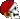

Kraken Nero - 04 Novembre 2025
Il mare, stanotte, è una vasta lastra di velluto scuro che riflette una falce di luna argentea e le fioche stelle. Un'aria fredda e densa avvolge la rada di Ghileas, portando con sé l'odore salmastro e il profumo di spezie lontane. L'acqua è calma, increspata solo da un leggero moto ondoso che culla placidamente la nave ammiraglia. Lì, maestoso e imponente, si erge il vascello, battezzato giustamente il Kraken Nero. È un'ammiraglia a quattro alberi, le cui vele sono adesso serrate, donando alla nave una sagoma cupa e massiccia contro l'oscurità del cielo. Lo scafo, dipinto di un nero profondo come l'inchiostro del mostro che le dà il nome, sembra quasi assorbire la poca luce. Lungo i bordi del ponte, troneggiano le sagome scure e minacciose di diverse baliste cariche, i cui meccanismi sono lucidi e oliati. A bordo, l'atmosfera è elettrica e pervasa da un'aria di gioiosa e inaspettata festa. La ciurma del Kraken Nero conta quasi un centinaio di uomini, marinai dalle facce tatuate e corpi robusti, ed è in fermento. Tra loro si distinguono una decina di uomini, donne e ragazzini, giunti dalla Ciurma della Coccobello, un rinforzo variegato che aggiunge vivacità al ponte. Nonostante il disordine tipico di una nave pirata, tutto è stranamente ordinato e preciso per l'evento. Dalle gole dei pirati si levano suoni tribali e gutturali, che si mescolano al ritmo martellante di strumenti a percussione fatti di pelli tese e legno risuonante. Intonano canti che sanno di mare aperto e bottini, e il battito costante riscalda la serata. Accanto al fianco del Kraken Nero, si trova ora lo sciabecco dal fasciame chiaro, con vele ripiegate e fiancate basse tipiche delle navi veloci da costa. È stato legato con cavi robusti, stretto come un compagno di danza. Due passerelle sono state abbassate tra i ponti delle due navi. All'ingresso del ponte principale, si erge un imponente membro della ciurma. La voce roca dell’uomo sul ponte non tuona, stavolta. Non ordina. Si limita a parlare. A proporre. «Chi entra sul Kraken Nero lo fa da ospite, non da nemico. Qui si festeggia, non si sfodera. Se volete, c’è un baule che può custodire i vostri ferri finché il sole non torna alto.» Non un comando, ma una promessa. Il grande baule è già lì, aperto, con le cerniere robuste e un tappeto di velluto scuro sul fondo, sorprendentemente curato, quasi elegante. Un simbolo. Non uno stipo per armi: un altare di tregua. La ciurma del Kraken Nero non osserva con sospetto. Nessuno punta occhi avidi sulle armi altrui. Anzi, continuano a bere, ridere, battere le mani al ritmo dei tamburi. La festa non si ferma. E così, uno alla volta, gli ospiti decidono.
20:59 Vahn
Vahn  [Kraken - ponte] [sale sulla Kraken, già disarmato. Veste un completo nero sobrio, braghe scure e stivali robusti. Indossa il mantello rosso di Kel, un po’ lacerato e tenuto fermo all’altezza della spalla da una spilla di ottone recante un giglio. Il tricorno nero di Thamior stacca sulla pelle pallida e sui capelli bianchi. Si percepisce un lieve zoppicare della gamba destra, mentre sale sul ponte della nave.]...Capitano Cragson, è un onore essere ospiti sulla vostra Kraken. [Nonostante la sua voce sia chiara e sincera, sul volto giovane c’è un velo di stanchezza. Qualche graffio e arrossamento, segno di una caduta forse. L’anulare e il medio della mano sinistra sono stretti assieme da una fasciatura. Nei suoi occhi, però, la luna gioca come una fiamma inquieta e vivace.]
[Kraken - ponte] [sale sulla Kraken, già disarmato. Veste un completo nero sobrio, braghe scure e stivali robusti. Indossa il mantello rosso di Kel, un po’ lacerato e tenuto fermo all’altezza della spalla da una spilla di ottone recante un giglio. Il tricorno nero di Thamior stacca sulla pelle pallida e sui capelli bianchi. Si percepisce un lieve zoppicare della gamba destra, mentre sale sul ponte della nave.]...Capitano Cragson, è un onore essere ospiti sulla vostra Kraken. [Nonostante la sua voce sia chiara e sincera, sul volto giovane c’è un velo di stanchezza. Qualche graffio e arrossamento, segno di una caduta forse. L’anulare e il medio della mano sinistra sono stretti assieme da una fasciatura. Nei suoi occhi, però, la luna gioca come una fiamma inquieta e vivace.]
Vahn [Kraken - ponte] [sale sulla Kraken, già disarmato. Veste un completo nero sobrio, braghe scure e stivali robusti. Indossa il mantello rosso di Kel, un po’ lacerato e tenuto fermo all’altezza della spalla da una spilla di ottone recante un giglio. Il tricorno nero di Thamior stacca sulla pelle pallida e sui capelli bianchi. Si percepisce un lieve zoppicare della gamba destra, mentre sale sul ponte della nave.]...Capitano Cragson, è un onore essere ospiti sulla vostra Kraken. [Nonostante la sua voce sia chiara e sincera, sul volto giovane c’è un velo di stanchezza. Qualche graffio e arrossamento, segno di una caduta forse. L’anulare e il medio della mano sinistra sono stretti assieme da una fasciatura. Nei suoi occhi, però, la luna gioca come una fiamma inquieta e vivace.]21:00 Ariel
Ariel  [Kraken - Ponte] [ Cammina sulla passerella che la separa dalla Kraken, mani in tasca. Porta una giacca in pelle tenuta stretta sull’addome da un cinturone con la fibbia argentata. Sotto una camicia vermiglia, scollata fino al seno. Pantaloni neri e stivalacci da pirata ai piedi. I capelli sono lasciati sciolti sulle spalle, solo qualche ciocca corvina è acconciata con un piccolo chignon a mezza testa. Sorride alle parole dell’uomo dalla voce roca, tira fuori le mani dalle tasche e alza entrambi i palmi, vuoti, lasciandoli ondeggiare a mezz’aria. ] Niente armi, amico, così come mamma mi ha fatta. [ Il capo sembra ciondolare distrattamente seguendo il ritmo dei tamburi suonati sulla Kraken mentre cammina sul ponte subito dietro Vahn. ]
[Kraken - Ponte] [ Cammina sulla passerella che la separa dalla Kraken, mani in tasca. Porta una giacca in pelle tenuta stretta sull’addome da un cinturone con la fibbia argentata. Sotto una camicia vermiglia, scollata fino al seno. Pantaloni neri e stivalacci da pirata ai piedi. I capelli sono lasciati sciolti sulle spalle, solo qualche ciocca corvina è acconciata con un piccolo chignon a mezza testa. Sorride alle parole dell’uomo dalla voce roca, tira fuori le mani dalle tasche e alza entrambi i palmi, vuoti, lasciandoli ondeggiare a mezz’aria. ] Niente armi, amico, così come mamma mi ha fatta. [ Il capo sembra ciondolare distrattamente seguendo il ritmo dei tamburi suonati sulla Kraken mentre cammina sul ponte subito dietro Vahn. ]
Ariel [Kraken - Ponte] [ Cammina sulla passerella che la separa dalla Kraken, mani in tasca. Porta una giacca in pelle tenuta stretta sull’addome da un cinturone con la fibbia argentata. Sotto una camicia vermiglia, scollata fino al seno. Pantaloni neri e stivalacci da pirata ai piedi. I capelli sono lasciati sciolti sulle spalle, solo qualche ciocca corvina è acconciata con un piccolo chignon a mezza testa. Sorride alle parole dell’uomo dalla voce roca, tira fuori le mani dalle tasche e alza entrambi i palmi, vuoti, lasciandoli ondeggiare a mezz’aria. ] Niente armi, amico, così come mamma mi ha fatta. [ Il capo sembra ciondolare distrattamente seguendo il ritmo dei tamburi suonati sulla Kraken mentre cammina sul ponte subito dietro Vahn. ]21:02 FrancisLake
FrancisLake  [Kraken Ponte] [E' l'emblema di quell'animo festivo. Nessuno più dell'intrepido Lake della bande nere rappresenta la gioia: completamente vestito di nero, tunica, fascia in vita, calzoni e calzari. Una spilla con un giglio bianco svetta sul pettorale sinistro. Ma più delle vesti è l'espressione tipica dell'uomo che può uccidere, della faccia da stronzo impunito e gli occhi di chi giudica a renderlo ancora più mvp della serata di festa.] Et necros Sit, signori. [Dice mostrando un sorriso leggero, dipinto per metà, sul volto dai tratti taglienti ed accattivanti. Cammina al fianco di Sylvimar con passo lento.]
[Kraken Ponte] [E' l'emblema di quell'animo festivo. Nessuno più dell'intrepido Lake della bande nere rappresenta la gioia: completamente vestito di nero, tunica, fascia in vita, calzoni e calzari. Una spilla con un giglio bianco svetta sul pettorale sinistro. Ma più delle vesti è l'espressione tipica dell'uomo che può uccidere, della faccia da stronzo impunito e gli occhi di chi giudica a renderlo ancora più mvp della serata di festa.] Et necros Sit, signori. [Dice mostrando un sorriso leggero, dipinto per metà, sul volto dai tratti taglienti ed accattivanti. Cammina al fianco di Sylvimar con passo lento.]
FrancisLake [Kraken Ponte] [E' l'emblema di quell'animo festivo. Nessuno più dell'intrepido Lake della bande nere rappresenta la gioia: completamente vestito di nero, tunica, fascia in vita, calzoni e calzari. Una spilla con un giglio bianco svetta sul pettorale sinistro. Ma più delle vesti è l'espressione tipica dell'uomo che può uccidere, della faccia da stronzo impunito e gli occhi di chi giudica a renderlo ancora più mvp della serata di festa.] Et necros Sit, signori. [Dice mostrando un sorriso leggero, dipinto per metà, sul volto dai tratti taglienti ed accattivanti. Cammina al fianco di Sylvimar con passo lento.]21:04 Rivka [Kraken/Ponte] Se ne sta l'Arpa mollemente seduta su una cassa, lì tra il gruppetto che percuote e fa bordello. Una cassa, furbescamente messa avanti ove lascia le gambe incrociate poggiate sopra. La schiena che sosta al legno, lei che è immersa in un manto vermiglio che la sovrasta e cela se non fossero quei pantaloni logori e gli stivalacci anche messi peggio e sfuggirvi. Braccia incrociate, capo rasato e mento sul petto. Tutto si potrebbe dire nel bordello, ma non che...effettivamente, la donna stia...russando. O più o meno, o qualcosa di simile. Fatto sta che sta silente ed ad occhi chiusi mentre qualcuno ogni tanto la percuote per verificare se sia viva o meno. Eccola, un'altra festaiola alla Lake
21:05 Sylvimar
Sylvimar  [Kraken - Ponte] [ la barda sale sulla Kraken, non ha armi con se’, solo un flauto legato alla cintura, che si intravede dal mantello rosso scuro che indossa. Veste un abito dello stesso colore, di un velluto pesante, con maniche lunghe e scollo squadrato, bordato da passamanerie con gigli ricamati. La gonna è ampia e lunga, e la tiene su con le mani, per far sì di camminare sulla passerella senza intralcio. Sembra aver recuperato una camminata sicura. ] Dovremmo rivedere i colori del tuo guardaroba [ borbotta a Francis, al suo fianco. Poi alza gli occhi castani che vengono attraversati da un lampo di meraviglia per quella nave così diversa dalla Coccobello, che sembra quasi spuntare dal buio della notte ] Davvero un’ammiraglia degna di storie e leggende. [ commenta, onestamente ammirata ]
[Kraken - Ponte] [ la barda sale sulla Kraken, non ha armi con se’, solo un flauto legato alla cintura, che si intravede dal mantello rosso scuro che indossa. Veste un abito dello stesso colore, di un velluto pesante, con maniche lunghe e scollo squadrato, bordato da passamanerie con gigli ricamati. La gonna è ampia e lunga, e la tiene su con le mani, per far sì di camminare sulla passerella senza intralcio. Sembra aver recuperato una camminata sicura. ] Dovremmo rivedere i colori del tuo guardaroba [ borbotta a Francis, al suo fianco. Poi alza gli occhi castani che vengono attraversati da un lampo di meraviglia per quella nave così diversa dalla Coccobello, che sembra quasi spuntare dal buio della notte ] Davvero un’ammiraglia degna di storie e leggende. [ commenta, onestamente ammirata ]
Sylvimar [Kraken - Ponte] [ la barda sale sulla Kraken, non ha armi con se’, solo un flauto legato alla cintura, che si intravede dal mantello rosso scuro che indossa. Veste un abito dello stesso colore, di un velluto pesante, con maniche lunghe e scollo squadrato, bordato da passamanerie con gigli ricamati. La gonna è ampia e lunga, e la tiene su con le mani, per far sì di camminare sulla passerella senza intralcio. Sembra aver recuperato una camminata sicura. ] Dovremmo rivedere i colori del tuo guardaroba [ borbotta a Francis, al suo fianco. Poi alza gli occhi castani che vengono attraversati da un lampo di meraviglia per quella nave così diversa dalla Coccobello, che sembra quasi spuntare dal buio della notte ] Davvero un’ammiraglia degna di storie e leggende. [ commenta, onestamente ammirata ]21:06Maseeri [kraken – ponte] [attraversa la passerella per ultima, vestita di nero, calzoni infilati negli stivali morbidi, una camicia nera di ottima fattura aperta su un corpetto di velluto che lascia vedere le collane che indossa, passa davanti alla ciurma salutando con un cenno, si china e sfila un coltello dallo stivale, lo appoggia nel baule poi prosegue raggiungendo il ponte. I capelli intrecciati dondolano sulle spalle] bentrovati [saluta posando lo sguardo a turno sulla ciurma, dopo aver brevemente sorriso al capitano]
Maseeri [kraken – ponte] [attraversa la passerella per ultima, vestita di nero, calzoni infilati negli stivali morbidi, una camicia nera di ottima fattura aperta su un corpetto di velluto che lascia vedere le collane che indossa, passa davanti alla ciurma salutando con un cenno, si china e sfila un coltello dallo stivale, lo appoggia nel baule poi prosegue raggiungendo il ponte. I capelli intrecciati dondolano sulle spalle] bentrovati [saluta posando lo sguardo a turno sulla ciurma, dopo aver brevemente sorriso al capitano]21:12Bill  [Kraken Nero - Ponte] rimane lì dove stava: vicino alla balaustra di babordo, a mezza luce, la luna che gli prende un lato del volto e l’altro lo lascia in ombra. «Vivere Mori, uomini e donne del ducato» Ha la giacca lunga aperta, le maniche rimboccate, il collo nudo. Le mani in vista, vuote. Il vento gli smuove i capelli e la barba come alghe scure. «Siete sul Kraken Nero ora. Che vi piaccia o no, da qui il mare lo si guarda con occhi diversi.» Quando gli ospiti mettono piede sul ponte, non va loro incontro. Aspetta. Li lascia arrivare. Poi, un passo avanti. Il tono si abbassa, complice, come se stesse svelando un segreto idiota e sacro allo stesso tempo: «stasera c’è da dirimere una questione antica come le maree: chi, fra i mari tutti, tiene la pisciata più lunga.» Una pausa. Uno sguardo lento su ciascuno. Serio. Troppo serio. «No sputi. No testimoni fasulli. No vento a favore.»
[Kraken Nero - Ponte] rimane lì dove stava: vicino alla balaustra di babordo, a mezza luce, la luna che gli prende un lato del volto e l’altro lo lascia in ombra. «Vivere Mori, uomini e donne del ducato» Ha la giacca lunga aperta, le maniche rimboccate, il collo nudo. Le mani in vista, vuote. Il vento gli smuove i capelli e la barba come alghe scure. «Siete sul Kraken Nero ora. Che vi piaccia o no, da qui il mare lo si guarda con occhi diversi.» Quando gli ospiti mettono piede sul ponte, non va loro incontro. Aspetta. Li lascia arrivare. Poi, un passo avanti. Il tono si abbassa, complice, come se stesse svelando un segreto idiota e sacro allo stesso tempo: «stasera c’è da dirimere una questione antica come le maree: chi, fra i mari tutti, tiene la pisciata più lunga.» Una pausa. Uno sguardo lento su ciascuno. Serio. Troppo serio. «No sputi. No testimoni fasulli. No vento a favore.»
Bill [Kraken Nero - Ponte] rimane lì dove stava: vicino alla balaustra di babordo, a mezza luce, la luna che gli prende un lato del volto e l’altro lo lascia in ombra. «Vivere Mori, uomini e donne del ducato» Ha la giacca lunga aperta, le maniche rimboccate, il collo nudo. Le mani in vista, vuote. Il vento gli smuove i capelli e la barba come alghe scure. «Siete sul Kraken Nero ora. Che vi piaccia o no, da qui il mare lo si guarda con occhi diversi.» Quando gli ospiti mettono piede sul ponte, non va loro incontro. Aspetta. Li lascia arrivare. Poi, un passo avanti. Il tono si abbassa, complice, come se stesse svelando un segreto idiota e sacro allo stesso tempo: «stasera c’è da dirimere una questione antica come le maree: chi, fra i mari tutti, tiene la pisciata più lunga.» Una pausa. Uno sguardo lento su ciascuno. Serio. Troppo serio. «No sputi. No testimoni fasulli. No vento a favore.»21:12 Mogan
Mogan
Mogan 
[Kraken - Ponte] Il Camelè è appoggiato al parapetto di babordo, nei pressi del cassero di prua, dove le lanterne dondolano lente, gettando riflessi sul legno bagnato dell'ammiraglia. Il fumo della brocca che uncina fra le mani si mescola a quello della pipa di qualche marinaio poco distante, creando nell’aria un vapore dolciastro di anice, finocchietto e alcool. La luce dei fuochi gli accarezza il viso bronzeo, dai lineamenti affilati, brillando di un sudore quieto mentre i capelli, raccolti in una fusciacca cremisi che gli stringe la fronte, si sciolgono a ciocche spesse e scure fino al fianco, tremolando a ogni soffio di brezza marina. Indossa abiti scuri: una casacca smanicata, con le braccia nervose ben in vista, braghe altrettanto scure c'affondano in un paio di stivalacci da marinaio, stretti da grandi fibbie argentee a forma di teschio. Scruta i marinai, poi gli occhi fuggono in direzione della passerella passando in rassegna le figure di chi giunge. Istintivamente sputa tre volte di lato, verso destra. Poco dopo prende passo, lento, in direzione di Bill.21:20Vahn [Kraken - ponte] [guarda la ciurma della Kraken, spaziando su quella marea umana cantante con nello sguardo ora un misto di fervore e soggezione. Cerca con gli occhi Maseeri, a cui sorride con gli occhi. Incrocia Ariel dietro di lui, facendole un cenno con il mento e uno sguardo d’intesa. Poi Sylvimar e Francis, con gratitudine. Come se chiudesse con quel giro d’occhi silenzioso il nodo di una catena invisibile. Si dirige senza fretta verso Bill, come Mogan. Guarda il capitano della Kraken con occhi altrettanto seri]…qualcuno a Rivengard dice ancora di vedere ancora un mio arcobaleno, dopo una prova simile. Chi è il vostro sfidante? [Scherza, sorridendogli infine e porgendogli la destra.]…beviamo qualcosa assieme prima. C’è molto di cui festeggiare oggi. E molto altro di cui parlare.
Vahn [Kraken - ponte] [guarda la ciurma della Kraken, spaziando su quella marea umana cantante con nello sguardo ora un misto di fervore e soggezione. Cerca con gli occhi Maseeri, a cui sorride con gli occhi. Incrocia Ariel dietro di lui, facendole un cenno con il mento e uno sguardo d’intesa. Poi Sylvimar e Francis, con gratitudine. Come se chiudesse con quel giro d’occhi silenzioso il nodo di una catena invisibile. Si dirige senza fretta verso Bill, come Mogan. Guarda il capitano della Kraken con occhi altrettanto seri]…qualcuno a Rivengard dice ancora di vedere ancora un mio arcobaleno, dopo una prova simile. Chi è il vostro sfidante? [Scherza, sorridendogli infine e porgendogli la destra.]…beviamo qualcosa assieme prima. C’è molto di cui festeggiare oggi. E molto altro di cui parlare.21:22Ariel [Kraken - Ponte] [ Un cenno del capo e un sorriso sghembo verso Bill. ] Capitano. [ Si guarda intorno, soffermandosi sulla ciurma e sulle sfumature cupe che avvolgono la Kraken. ] Molte cose sono cambiate dall’ultima volta che vi ho visto, ma non l’intensità della mia curiosità. Scopriremo chi piscia più lontano, come vuole la tradizione. [ Un’occhiata vispa a Vahn. ] Ma come dice il mio compare, niente rum niente festa. [ L’attenzione si sposta subito dopo su Mogan, a cui rivolge uno sguardo assorto, sottile, ma tranquillo. ]
Ariel [Kraken - Ponte] [ Un cenno del capo e un sorriso sghembo verso Bill. ] Capitano. [ Si guarda intorno, soffermandosi sulla ciurma e sulle sfumature cupe che avvolgono la Kraken. ] Molte cose sono cambiate dall’ultima volta che vi ho visto, ma non l’intensità della mia curiosità. Scopriremo chi piscia più lontano, come vuole la tradizione. [ Un’occhiata vispa a Vahn. ] Ma come dice il mio compare, niente rum niente festa. [ L’attenzione si sposta subito dopo su Mogan, a cui rivolge uno sguardo assorto, sottile, ma tranquillo. ]21:27FrancisLake [Kraken Ponte] L'ultima volta che mi è capitato di competere in questo genere di tenzoni, ricordo, che ci fu il maremoto di Kharidian. [Avvicina la mano alle labbra, come se sussurrasse.] Ma non ditelo ad Euridas, o mi ucciderà. Come se non avesse già ottimi motivi. [Dice, mani nelle tasche, dondolando i talloni.]
FrancisLake [Kraken Ponte] L'ultima volta che mi è capitato di competere in questo genere di tenzoni, ricordo, che ci fu il maremoto di Kharidian. [Avvicina la mano alle labbra, come se sussurrasse.] Ma non ditelo ad Euridas, o mi ucciderà. Come se non avesse già ottimi motivi. [Dice, mani nelle tasche, dondolando i talloni.]21:28 FrancisLake [Kraken Ponte] sui talloni, dal momento che non ha talloni dondolanti.
21:29Rivka  [Kraken/Ponte] Che gran rottura di palle...[Un sospiro. Eccola, è viva e simpaticissima. Lei che da Luce solo ad un occhio alzando lo sguardo verso la gente che arriva dalla Coccobello. Spira aria dal naso mentre intercetta qualche volto, guardingo l'indice ad investigar una narice. Così, elegante come sempre. Nessun orpello, nessun gingillo se non la fede all'anulare della manca] We we...Var, Vat, Vape...oh Com'è che si chiama? [Piglia attenzione e lucidità, o almeno quel poco che le si concede. E lo indica con lo stesso dito ficcato poco prima nel naso al primo tizio accanto, ignara forse che quello stia suonando e che sia parte della sua stessa ciurma] Oh quello lo conosco. Và và anche quella là e quello vestito di nero..Oh, ma lo sai che [E nulla. Intanto quello s'allontana e lei si passa la mano sul manto]
[Kraken/Ponte] Che gran rottura di palle...[Un sospiro. Eccola, è viva e simpaticissima. Lei che da Luce solo ad un occhio alzando lo sguardo verso la gente che arriva dalla Coccobello. Spira aria dal naso mentre intercetta qualche volto, guardingo l'indice ad investigar una narice. Così, elegante come sempre. Nessun orpello, nessun gingillo se non la fede all'anulare della manca] We we...Var, Vat, Vape...oh Com'è che si chiama? [Piglia attenzione e lucidità, o almeno quel poco che le si concede. E lo indica con lo stesso dito ficcato poco prima nel naso al primo tizio accanto, ignara forse che quello stia suonando e che sia parte della sua stessa ciurma] Oh quello lo conosco. Và và anche quella là e quello vestito di nero..Oh, ma lo sai che [E nulla. Intanto quello s'allontana e lei si passa la mano sul manto]
Rivka [Kraken/Ponte] Che gran rottura di palle...[Un sospiro. Eccola, è viva e simpaticissima. Lei che da Luce solo ad un occhio alzando lo sguardo verso la gente che arriva dalla Coccobello. Spira aria dal naso mentre intercetta qualche volto, guardingo l'indice ad investigar una narice. Così, elegante come sempre. Nessun orpello, nessun gingillo se non la fede all'anulare della manca] We we...Var, Vat, Vape...oh Com'è che si chiama? [Piglia attenzione e lucidità, o almeno quel poco che le si concede. E lo indica con lo stesso dito ficcato poco prima nel naso al primo tizio accanto, ignara forse che quello stia suonando e che sia parte della sua stessa ciurma] Oh quello lo conosco. Và và anche quella là e quello vestito di nero..Oh, ma lo sai che [E nulla. Intanto quello s'allontana e lei si passa la mano sul manto]21:30Sylvimar [Kraken - Ponte] [ annuisce seria alle parole di Bill, incrociando lo sguardo di Vahn e facendogli un rapido occhiolino, come chi sa nel profondo, di poter puntare sul cavallo vincente. ] La vostra nave è una meraviglia per gli occhi, Capitano. [ un cenno col capo a Bill, mentre i capelli color rame sembrano una piccola fiaccola mossa dalla brezza della sera. Si guarda poi attorno curiosa, vagando fra i volti sconosciuti, come una piccola volpe selvatica che annusi l’aria in una porzione di foresta a lei sconosciuta. Solo quando sente la sorella parlare di rum, sembra d’un colpo sentirsi a casa. Con una smorfia accennata, la guarda roteando gli occhi al cielo, cosa che si protrae alle parole di Francis ] Sempre modesto [ gli sussurra al fianco, punzecchiandolo con l’indice ]
Sylvimar [Kraken - Ponte] [ annuisce seria alle parole di Bill, incrociando lo sguardo di Vahn e facendogli un rapido occhiolino, come chi sa nel profondo, di poter puntare sul cavallo vincente. ] La vostra nave è una meraviglia per gli occhi, Capitano. [ un cenno col capo a Bill, mentre i capelli color rame sembrano una piccola fiaccola mossa dalla brezza della sera. Si guarda poi attorno curiosa, vagando fra i volti sconosciuti, come una piccola volpe selvatica che annusi l’aria in una porzione di foresta a lei sconosciuta. Solo quando sente la sorella parlare di rum, sembra d’un colpo sentirsi a casa. Con una smorfia accennata, la guarda roteando gli occhi al cielo, cosa che si protrae alle parole di Francis ] Sempre modesto [ gli sussurra al fianco, punzecchiandolo con l’indice ]21:30 Maseeri [kraken – ponte] osserva Vahn, lascia fare a lui, rimane in disparte ed osserva, si appoggia al parapetto e incrocia le braccia, piegando la testa di lato come a scrocchiare il collo, non parla, non si muove, gli occhi verdi che scorrono sui presenti sono per lo più apatici.
Vahn sussurra a Rivka: Vape. Morto
Rivka ti sussurra: <3
21:34Bill [Kraken Nero - Ponte] La risata gli scoppia in petto. Voce bassa, roca, una vibrazione di gola che sembra far tremare il fasciame sotto i piedi. Non tende subito la mano a Vahn. Prima lo guarda negli occhi. C’è misura. Peso. Fondo. Poi gliela prende, presa secca, callosa. «Lo sfidante?» Una pausa. «Il mio secondo, ovviamente.» Un breve cenno verso Mogan, non di presentazione, ma di riconoscimento. Di appartenenza. Poi si gira non verso gli ospiti, ma verso la massa viva del Kraken. E quando apre la bocca è come se il mare stesso sputasse schiuma: «OHÉ, FIGLI DI CINQUE PADRI E DI NESSUNA MADRE!» La nave non risponde: esplode. Le voci si fermano, come se stessero aspettando proprio quel brontolio dalla gola del capitano. Bill alza un braccio, senza bisogno di guardare nessuno. «CHE CI SONO OSPITI SUL PONTE E A QUANTO SI VEDE NON GLI S’EMPION LE MANI DA SOLE! PORTATE DA BERE! E NON QUELLA PISCIA DI LEGNO! IL RUM VERO, QUELLO CHE ACCENDE I PECCATI E FA CADERE I DENTI DI CHI HA DENTI!» Un coro di risate, bestemmie, controbestemmie, un AYYYYY lungo come una vela al vento, e qualcuno da poppa che urla se vale l’urina di ieri. Bill scende di voce. Non per discrezione. «Beviamo.» Uno sguardo a Vahn e Maseeri. Uno, lento, a FrancisLake e Sylvimar. «Festeggiamo. E nel mentre… parliamo.» Infine si soffermerà con parole ed attenzione su Ariel.
Bill [Kraken Nero - Ponte] La risata gli scoppia in petto. Voce bassa, roca, una vibrazione di gola che sembra far tremare il fasciame sotto i piedi. Non tende subito la mano a Vahn. Prima lo guarda negli occhi. C’è misura. Peso. Fondo. Poi gliela prende, presa secca, callosa. «Lo sfidante?» Una pausa. «Il mio secondo, ovviamente.» Un breve cenno verso Mogan, non di presentazione, ma di riconoscimento. Di appartenenza. Poi si gira non verso gli ospiti, ma verso la massa viva del Kraken. E quando apre la bocca è come se il mare stesso sputasse schiuma: «OHÉ, FIGLI DI CINQUE PADRI E DI NESSUNA MADRE!» La nave non risponde: esplode. Le voci si fermano, come se stessero aspettando proprio quel brontolio dalla gola del capitano. Bill alza un braccio, senza bisogno di guardare nessuno. «CHE CI SONO OSPITI SUL PONTE E A QUANTO SI VEDE NON GLI S’EMPION LE MANI DA SOLE! PORTATE DA BERE! E NON QUELLA PISCIA DI LEGNO! IL RUM VERO, QUELLO CHE ACCENDE I PECCATI E FA CADERE I DENTI DI CHI HA DENTI!» Un coro di risate, bestemmie, controbestemmie, un AYYYYY lungo come una vela al vento, e qualcuno da poppa che urla se vale l’urina di ieri. Bill scende di voce. Non per discrezione. «Beviamo.» Uno sguardo a Vahn e Maseeri. Uno, lento, a FrancisLake e Sylvimar. «Festeggiamo. E nel mentre… parliamo.» Infine si soffermerà con parole ed attenzione su Ariel.21:35Mogan [Kraken - Ponte] [Il rumore dei tacchi che cozzano sul legno del ponte anticipano il suo arrivo; impettito, naso adunco ben in vista, fiero comè'l becco d'un gabbiano. Beve un lungo sorso dalla brocca che afferra. Sulle dita sottili e callose, le nocche sono come pietre, segnate da tagli e cicatrici vecchie. Porta tre anelli d’ottone, anneriti dal tempo, e uno d’argento deformato dal fuoco, con una grande pietra azzurra al centro. Ogni volta che inclina la brocca, gli anelli tintinnano lievemente contro il legno.] Vivere Mori, vossignoria. Benvenuti a bordo della Caracca Negra dell'Astendar sbudellato dal sior Cragson in persona! [ Un cenno del mento ad indicare Bill. Gracchiante, ride, mostrando le arcate dentali che per un istante luccicano nell’oscurità, riflettendo l’oro zecchino incastonato fra i molari.]
Mogan [Kraken - Ponte] [Il rumore dei tacchi che cozzano sul legno del ponte anticipano il suo arrivo; impettito, naso adunco ben in vista, fiero comè'l becco d'un gabbiano. Beve un lungo sorso dalla brocca che afferra. Sulle dita sottili e callose, le nocche sono come pietre, segnate da tagli e cicatrici vecchie. Porta tre anelli d’ottone, anneriti dal tempo, e uno d’argento deformato dal fuoco, con una grande pietra azzurra al centro. Ogni volta che inclina la brocca, gli anelli tintinnano lievemente contro il legno.] Vivere Mori, vossignoria. Benvenuti a bordo della Caracca Negra dell'Astendar sbudellato dal sior Cragson in persona! [ Un cenno del mento ad indicare Bill. Gracchiante, ride, mostrando le arcate dentali che per un istante luccicano nell’oscurità, riflettendo l’oro zecchino incastonato fra i molari.]21:43Vahn [Kraken - ponte] [stringe la mano di Bill, sostenendo il suo sguardo. Negli occhi chiari dell’elfo, Bill potrà leggere una sorta di sfacciata inesperienza, vaga soggezione ma anche gioia di vivere, libertà, mare. La sua presa non è forte ma vi è una resistenza nell’accettare quella di Bill.]…il vostro secondo, hm? [gira lo sguardo verso Mogan. Lo soppesa con rispetto.]…ti chiamano Cammello. Un nome che incute rispetto, in queste tenzoni. [gli concede, cercando negli occhi dell’altro l’umanità nuda e cruda che lui gli dona. Dal mantello estrae una pergamena arrotolata che passa ad Ariel, con un cenno del capo. Guarda anche Maseeri, serio]…il nostro Araldo e Magister vi metteranno a conoscenza di questa nuova idea di rotta e di commercio, mentre io mi preparo. [serio, mentre raccatta una bottiglia di Rum che uno della ciurma della Kraken gli passa. Non nota ancora Rivka, in tutto quel maramaglio vivace]...Francis. Presentatemi come sfidante.
Vahn [Kraken - ponte] [stringe la mano di Bill, sostenendo il suo sguardo. Negli occhi chiari dell’elfo, Bill potrà leggere una sorta di sfacciata inesperienza, vaga soggezione ma anche gioia di vivere, libertà, mare. La sua presa non è forte ma vi è una resistenza nell’accettare quella di Bill.]…il vostro secondo, hm? [gira lo sguardo verso Mogan. Lo soppesa con rispetto.]…ti chiamano Cammello. Un nome che incute rispetto, in queste tenzoni. [gli concede, cercando negli occhi dell’altro l’umanità nuda e cruda che lui gli dona. Dal mantello estrae una pergamena arrotolata che passa ad Ariel, con un cenno del capo. Guarda anche Maseeri, serio]…il nostro Araldo e Magister vi metteranno a conoscenza di questa nuova idea di rotta e di commercio, mentre io mi preparo. [serio, mentre raccatta una bottiglia di Rum che uno della ciurma della Kraken gli passa. Non nota ancora Rivka, in tutto quel maramaglio vivace]...Francis. Presentatemi come sfidante.21:46Ariel [Kraken - Ponte] [ Ride di gusto al richiamo sguaiato del Capitano per la sua ciurma, annuisce soddisfatta e respira a pieni polmoni l’aria piena di sale che aleggia sulla Kraken. ] Mi erano mancate le onde, e non solo quelle. [ Dice voltandosi verso la sorella e facendole l’occhiolino. Poi, riportando l’attenzione su Bill, si schiarisce la voce e le labbra si piegano all’insù, placide. ] E sia, sior Cragson. [ Fa eco a Mogan. ] Beviamo, e parliamo. [ Raccoglie con un gesto fluido la pergamena che le passa Vahn, il busto si piega appena in un inchino verso il bardo. ]
Ariel [Kraken - Ponte] [ Ride di gusto al richiamo sguaiato del Capitano per la sua ciurma, annuisce soddisfatta e respira a pieni polmoni l’aria piena di sale che aleggia sulla Kraken. ] Mi erano mancate le onde, e non solo quelle. [ Dice voltandosi verso la sorella e facendole l’occhiolino. Poi, riportando l’attenzione su Bill, si schiarisce la voce e le labbra si piegano all’insù, placide. ] E sia, sior Cragson. [ Fa eco a Mogan. ] Beviamo, e parliamo. [ Raccoglie con un gesto fluido la pergamena che le passa Vahn, il busto si piega appena in un inchino verso il bardo. ]21:47FrancisLake [Kraken Ponte] Cammello, bentrovato. Peccato non siete un cittadino di Ghileas, nelle nostre leggi è previsto un premio alla migliore bestemmia del mese. Indubbiamente sareste già in lizza. [Afferma con orgoglio e già più a suo agio ora che il calendario è stato consacrato.] Tuttavia essendo il secondo dì di Thystonio, vi insfido Cammello a trovarne una bello per il dio della forza, che ci conceda di cacar rigogliosi, così come sua madre fece con lui . [Esplica, poliglotta. Poi si volge a Sylvimar, parlando la lingua comune.] Mi è venuta un'idea. Sta a guadare. [Si volta quindi verso Ariel e le fa una serie di segni che lei sicuramente intuirà: Incrocia i due pollici uno sopra l'altro e poi muove il resto il resto delle dita, come le ali di una farfalla.]
FrancisLake [Kraken Ponte] Cammello, bentrovato. Peccato non siete un cittadino di Ghileas, nelle nostre leggi è previsto un premio alla migliore bestemmia del mese. Indubbiamente sareste già in lizza. [Afferma con orgoglio e già più a suo agio ora che il calendario è stato consacrato.] Tuttavia essendo il secondo dì di Thystonio, vi insfido Cammello a trovarne una bello per il dio della forza, che ci conceda di cacar rigogliosi, così come sua madre fece con lui . [Esplica, poliglotta. Poi si volge a Sylvimar, parlando la lingua comune.] Mi è venuta un'idea. Sta a guadare. [Si volta quindi verso Ariel e le fa una serie di segni che lei sicuramente intuirà: Incrocia i due pollici uno sopra l'altro e poi muove il resto il resto delle dita, come le ali di una farfalla.]21:47 Ariel [Kraken - Ponte] [ L’altra mano invece afferra una delle bottiglie di rum offerte dalla ciurma, un sorriso riconoscente sul viso. ]
21:47Rivka [Kraken/Ponte] [Un "oplà" di compagnia, si rialza con una lentezza esasperante. Si stringe nel manto che allegro spazza il ponte: tanto mica è suo. Oltre che portacaccole può fare un sacco di cose. S'alza la voce gracchiante ed acidula] Eeeeh Capitano, che ti urli!? Va beh che c'hai un'età, ma qui ci sentiamo tutti bene. Tranne quello senza orecchie. Chee... [Si volta a cercar qualcuno, fa spallucce dando via al passo] Io gliel'avevo detto che partivamo...[Neutra. Normale, a mezza bocca. Un cenno della destra a lavar via le urla della ciurma o solo quel pensiero molesto. Lei che par più interessata a costeggiare MAASERI e tentarvi un attracco laterale. Solitaria, Silente: spicca come Oro sulla balaustra. Lenta, guardinga. Una volpe con il passo d'un elefante. Impossibile non notarla anche se piccola, ma trasuda molestia]
Rivka [Kraken/Ponte] [Un "oplà" di compagnia, si rialza con una lentezza esasperante. Si stringe nel manto che allegro spazza il ponte: tanto mica è suo. Oltre che portacaccole può fare un sacco di cose. S'alza la voce gracchiante ed acidula] Eeeeh Capitano, che ti urli!? Va beh che c'hai un'età, ma qui ci sentiamo tutti bene. Tranne quello senza orecchie. Chee... [Si volta a cercar qualcuno, fa spallucce dando via al passo] Io gliel'avevo detto che partivamo...[Neutra. Normale, a mezza bocca. Un cenno della destra a lavar via le urla della ciurma o solo quel pensiero molesto. Lei che par più interessata a costeggiare MAASERI e tentarvi un attracco laterale. Solitaria, Silente: spicca come Oro sulla balaustra. Lenta, guardinga. Una volpe con il passo d'un elefante. Impossibile non notarla anche se piccola, ma trasuda molestia]21:50Sylvimar [Kraken - Ponte] [ Si limita a sospirare e a scuotere il capo, sentendosi circondata da un alone sinistro di scarsa serietà. ] Mi serve da bere. [ commenta, sembra già stremata. ]
Sylvimar [Kraken - Ponte] [ Si limita a sospirare e a scuotere il capo, sentendosi circondata da un alone sinistro di scarsa serietà. ] Mi serve da bere. [ commenta, sembra già stremata. ]21:50 Maseeri [kraken – ponte] recupera da bere ringraziando con un cenno e rimane lì dov’è, appoggiata al parapetto a guardare, incrocia per un istante lo sguardo del capitano e fa spallucce poi torna a bere guardando lo spettacolo poi si avvede di una faina che la raggiunge felpata, piega la testa e osserva divertita Rivka appropinquarsi
21:52Bill [Kraken Nero - Ponte] «Una donna che tiene in mano la rotta e le parole.» Un breve cenno del mento, quel tanto che basta a essere riconoscimento, non galanteria nei riguardi di Ariel.
Bill [Kraken Nero - Ponte] «Una donna che tiene in mano la rotta e le parole.» Un breve cenno del mento, quel tanto che basta a essere riconoscimento, non galanteria nei riguardi di Ariel.21:54FrancisLake [Kraken Ponte] Signori, perdonatemi se scavalco le vostre azioni... qualunque esse siano e di qualsiasi natura, si intende. [Indica Vahn con il palmo della mano.] Lasciate che vi presenti la proboscide di Ghileas, l'orinatore sciorinatore, colui che non conosce rivali nell'arte della spada, da qualsiasi mano sia brandita! [Annuisce, socchiudendo gli occhi.] L'uomo che dopo dodici litri d'acqua creò la cascata di Andaloth, l'elfo che nascose al Conte di Sarimù, la ricetta di quei dieci galloni di thé che lui trovò... [Abbassa gli angoli delle labbra.]...gustosissimo. SiGNORI, SIGNORE e RIVKA. [Indica Vahn.] L'orgoglio del ducato! Vahn ebbasta, bardo a tempo indeterminato!
FrancisLake [Kraken Ponte] Signori, perdonatemi se scavalco le vostre azioni... qualunque esse siano e di qualsiasi natura, si intende. [Indica Vahn con il palmo della mano.] Lasciate che vi presenti la proboscide di Ghileas, l'orinatore sciorinatore, colui che non conosce rivali nell'arte della spada, da qualsiasi mano sia brandita! [Annuisce, socchiudendo gli occhi.] L'uomo che dopo dodici litri d'acqua creò la cascata di Andaloth, l'elfo che nascose al Conte di Sarimù, la ricetta di quei dieci galloni di thé che lui trovò... [Abbassa gli angoli delle labbra.]...gustosissimo. SiGNORI, SIGNORE e RIVKA. [Indica Vahn.] L'orgoglio del ducato! Vahn ebbasta, bardo a tempo indeterminato!21:55Mogan [Kraken - Ponte] [ Fiuta l'aria allungando il muso in direzione di Vahn. Bestia selvaggia.] Cammello per la gobba! [Un cenno del mento in direzione del proprio cavallo dei pantaloni. Lo afferra, donandosi una discreta palpata con la mano libera, la sinistra. Lascia che gli occhi scivolino lesti in direzione di Francislake, mentre annuisce ripetutamente.] Per il dio Tristolio allora! [Forse finge di riflettere, poi si batte il petto con la mano aperta.] Che ci addoni la forza di pisciare in poppa alle tempeste e cacar diritto ni calici degli dei malidetti! [ Lancia il boccale all'indietro e con il dorso della mano si asciuga la bocca.]
Mogan [Kraken - Ponte] [ Fiuta l'aria allungando il muso in direzione di Vahn. Bestia selvaggia.] Cammello per la gobba! [Un cenno del mento in direzione del proprio cavallo dei pantaloni. Lo afferra, donandosi una discreta palpata con la mano libera, la sinistra. Lascia che gli occhi scivolino lesti in direzione di Francislake, mentre annuisce ripetutamente.] Per il dio Tristolio allora! [Forse finge di riflettere, poi si batte il petto con la mano aperta.] Che ci addoni la forza di pisciare in poppa alle tempeste e cacar diritto ni calici degli dei malidetti! [ Lancia il boccale all'indietro e con il dorso della mano si asciuga la bocca.]21:57 Bill [Kraken Nero - Ponte] allunga una mano, non verso l’otre più vicino, ma verso uno dei suoi, quello con la mascella spaccata e l’occhio gonfio di qualche notte fa. L’uomo capisce prima ancora che Bill parli, e porge una bottiglia scura, sigillata con pece e cordame. Rum serio. Roba che fa vedere i santi o gli abissi. Bill la prende senza guardare, il pollice che gratta via appena un poco di resina dal collo. Poi, con un mezzo movimento del capo verso Ariel, non un ordine, non un invito, un accordo tacito, indica un angolo del ponte dove una vela ammainata fa da parete e il rumore della festa si smorza solo quel tanto che basta a capire le parole.
21:57Rivka [Kraken/Ponte] Buonasera bella Signora [Parte così, con un sorriso tra l'inquietante ed il mefitico in un sibilo divertito. La schiena che si poggia alla balaustra: le Dorate a scandagliare le figure innanzi tra gli eccessi ed il Caos lei si fa Serpe. E quando sta per dire altro giungono le parole di Francis a cui bastano due dita dalla fronte alla volta per ringraziarlo] T'aspetto sottocoperta Francis [Urla, ma poi scuote il capo ridacchiando. E già par scordarsi d'altro]
Rivka [Kraken/Ponte] Buonasera bella Signora [Parte così, con un sorriso tra l'inquietante ed il mefitico in un sibilo divertito. La schiena che si poggia alla balaustra: le Dorate a scandagliare le figure innanzi tra gli eccessi ed il Caos lei si fa Serpe. E quando sta per dire altro giungono le parole di Francis a cui bastano due dita dalla fronte alla volta per ringraziarlo] T'aspetto sottocoperta Francis [Urla, ma poi scuote il capo ridacchiando. E già par scordarsi d'altro]22:01Vahn [Kraken - ponte] [ascolta con una sorta di malcelato orgoglio le parole di Francis, sciorinanti, mentre osserva la mano di Mogan afferrarsi il cavallo dei pantaloni. Gli occhi si soffermano lì per un secondo di troppo, prima di risalire e fissarsi negli occhi del Camele con finta sicumera. Tace, bevendo un lungo sorso di Rhum dalla bottiglia che ha in mano, fissandolo.]…Non son fatte di metallo le spade che queste mani sanno maneggiare meglio. [dice quasi minaccioso. Poi un sorrisaccio debosciato che si piega in una mezza risata. Nelle orecchie puntute, i ferri da marinaio raccolgono barbagli di luna irriverenti.]…raccontami di te Cammello. Amo sapere la storia di chi devo sfidare.
Vahn [Kraken - ponte] [ascolta con una sorta di malcelato orgoglio le parole di Francis, sciorinanti, mentre osserva la mano di Mogan afferrarsi il cavallo dei pantaloni. Gli occhi si soffermano lì per un secondo di troppo, prima di risalire e fissarsi negli occhi del Camele con finta sicumera. Tace, bevendo un lungo sorso di Rhum dalla bottiglia che ha in mano, fissandolo.]…Non son fatte di metallo le spade che queste mani sanno maneggiare meglio. [dice quasi minaccioso. Poi un sorrisaccio debosciato che si piega in una mezza risata. Nelle orecchie puntute, i ferri da marinaio raccolgono barbagli di luna irriverenti.]…raccontami di te Cammello. Amo sapere la storia di chi devo sfidare.22:01Maseeri [kraken – ponte] [sospira e con un colpetto di reni si riporta dritta, la voce piuttosto forte] VA BENE SIGNORI IL TEMPO E’ GIUNTO [avanza verso il centro del ponte e riprende] LA GARA A CHI PISCIA PIU’ LONTANO SI APRE, PER RICHIESTA DEL CAPITANO LA QUI PRESENTE MASEERI SARA’ GIUDICE [abbassa appena la voce ma non di troppo] la mia assistente [indica Rivka con aria placida, come se fosse tutto calcolato] Quindi avete bevuto abbastanza sfidanti? [guarda Mogan guarda Vahn e guarda anche un po’ Rivka e il suo invidiabile passo felpato]
Maseeri [kraken – ponte] [sospira e con un colpetto di reni si riporta dritta, la voce piuttosto forte] VA BENE SIGNORI IL TEMPO E’ GIUNTO [avanza verso il centro del ponte e riprende] LA GARA A CHI PISCIA PIU’ LONTANO SI APRE, PER RICHIESTA DEL CAPITANO LA QUI PRESENTE MASEERI SARA’ GIUDICE [abbassa appena la voce ma non di troppo] la mia assistente [indica Rivka con aria placida, come se fosse tutto calcolato] Quindi avete bevuto abbastanza sfidanti? [guarda Mogan guarda Vahn e guarda anche un po’ Rivka e il suo invidiabile passo felpato]22:02Ariel [Kraken - Ponte] [ Replica con un cenno misurato del capo alle parole di Bill per poi voltarsi verso l’angolo del ponte scelto dal Capitano. Inizia già a muovere qualche passo in quella direzione senza troppe cerimonie. Prima di andare lancia soltanto un sussurro in lingua madre al bardo a tempo indeterminato, poi si fa silente e procede verso la vela ammainata. ]
Ariel [Kraken - Ponte] [ Replica con un cenno misurato del capo alle parole di Bill per poi voltarsi verso l’angolo del ponte scelto dal Capitano. Inizia già a muovere qualche passo in quella direzione senza troppe cerimonie. Prima di andare lancia soltanto un sussurro in lingua madre al bardo a tempo indeterminato, poi si fa silente e procede verso la vela ammainata. ]Ariel ti sussurra: *Se riuscirò a tornare in tempo ti aiuterò a vincere, altrimenti che Chorollis ti sorrida amico mio.*
22:04FrancisLake [Kraken Ponte] [Prende una bottiglia di Rhum che un marinaio gli passa, la stappa con i denti e la sventola verso Sylvimar.] Ogni vostro desio è un ordine mia signora. Quando è finita, lanciatela verso quella bestiolina laggiù, tanto è abituata. [Indica Rivka]
FrancisLake [Kraken Ponte] [Prende una bottiglia di Rhum che un marinaio gli passa, la stappa con i denti e la sventola verso Sylvimar.] Ogni vostro desio è un ordine mia signora. Quando è finita, lanciatela verso quella bestiolina laggiù, tanto è abituata. [Indica Rivka]22:06 Sylvimar [ Prende la bottiglia che Francis le porge, tirando una lunga sorsata. Resistere al clima dell’ammiraglia sembra impossibile, stasera, anche per lei che di solito ha la luna di traverso. Il rum aiuta. ] Non solo la rotta e le parole, Capitano, ma questa è una storia che ascolteremo altrove. [ commenta, sardonica, alle parole di Bill rivolte alla sorella, alla quale lancia un’occhiata impertinente. Poi all’improvviso, come se in lei si fosse accesa una scintilla di baldoria attaccatale chiaramente dai presenti, gli occhi sono solo per il Fringuello, Vahn. A voce alta e con un inchino per il giovane bardo declama ] Che Pungolo buchi teso e fiero l’orizzonte e si spinga oltre i limiti dei mari non ancora solcati da altro che non sia il tuo piscio vittorioso! Insegna agli dei ad orinare con stile! [ poi torna composta, si rassetta i capelli rossi, e finge che non sia successo niente. Ma tiene ancora la bottiglia per se’
Sylvimar [ Prende la bottiglia che Francis le porge, tirando una lunga sorsata. Resistere al clima dell’ammiraglia sembra impossibile, stasera, anche per lei che di solito ha la luna di traverso. Il rum aiuta. ] Non solo la rotta e le parole, Capitano, ma questa è una storia che ascolteremo altrove. [ commenta, sardonica, alle parole di Bill rivolte alla sorella, alla quale lancia un’occhiata impertinente. Poi all’improvviso, come se in lei si fosse accesa una scintilla di baldoria attaccatale chiaramente dai presenti, gli occhi sono solo per il Fringuello, Vahn. A voce alta e con un inchino per il giovane bardo declama ] Che Pungolo buchi teso e fiero l’orizzonte e si spinga oltre i limiti dei mari non ancora solcati da altro che non sia il tuo piscio vittorioso! Insegna agli dei ad orinare con stile! [ poi torna composta, si rassetta i capelli rossi, e finge che non sia successo niente. Ma tiene ancora la bottiglia per se’22:06Rivka [Kraken/Ponte] [Un annuire sicuro alle parole di Masee come se tutto fosse calcolato e preciso] Assolutamente...và. Ma hai visto là che c'è una balena? [E già si distrae. Assistente da assistere. Il solito dito a puntar distante. E poi si ravvede di qualcosa, quel vociare che la piglia più di altri] Ah Francis, ma vieni un po' qua [E la manina si smuove a farlo avvicinare. Fortuna o meno, coglie poco del resto...non è una novità]
Rivka [Kraken/Ponte] [Un annuire sicuro alle parole di Masee come se tutto fosse calcolato e preciso] Assolutamente...và. Ma hai visto là che c'è una balena? [E già si distrae. Assistente da assistere. Il solito dito a puntar distante. E poi si ravvede di qualcosa, quel vociare che la piglia più di altri] Ah Francis, ma vieni un po' qua [E la manina si smuove a farlo avvicinare. Fortuna o meno, coglie poco del resto...non è una novità]22:09Maseeri [kraken – ponte] secondo me vuole che tu vai là [suggerisce a Rivka poi sospirando commenta] il mio l’ho fatto [e lieve come era giunta in mezzo al ponte così lo abbandona tornando nel suo angolino alla balaustra, ci si riappoggia e torna a guardarli un po’ tutti… magicamente una bottiglia è apparsa nella sua mano, la bottiglia è piena ed ella la affronta con coraggio]
Maseeri [kraken – ponte] secondo me vuole che tu vai là [suggerisce a Rivka poi sospirando commenta] il mio l’ho fatto [e lieve come era giunta in mezzo al ponte così lo abbandona tornando nel suo angolino alla balaustra, ci si riappoggia e torna a guardarli un po’ tutti… magicamente una bottiglia è apparsa nella sua mano, la bottiglia è piena ed ella la affronta con coraggio]22:11Bill [Kraken Nero - Ponte] si ferma nell’ombra della vela, appoggia la spalla allo strallo, il rum ancora in mano. Non alza la voce. Non serve. Quando parla, lo fa come chi taglia una corda con la punta di un coltello. «Oggi, parlando con il vostro sovrintendente…» inspira piano dal naso, come chi pesa la frase «…credo ci sia stata un’incomprensione sul mio interesse.» Gli occhi passano da Ariel, a Mogan, e ritornano dove avevano iniziato. «Io non sono venuto a Ghileas per mercanzie.» scuote il capo, lento «Non vendo seta, spezie, legname, né chiedo tariffa per farlo. Il mio mestiere è il mare, non i conti.» Si tocca il petto con due dita, quasi distrattamente. «La mia flotta non è flotta mercantile. Non lo è mai stata.» Un sorso di rum, brucia, scalda, non scuote. «Il Duca aveva parlato chiaro, tempo fa. Lui vedeva il valore: le rotte migliori dell’Impero, quelle che ora le mie navi tengono pulite, vive, aperte.» Gli occhi si stringono, ma non per durezza, per lucidità. «L’accordo era semplice: se il Ducato ha rotte proprie, se vuole viaggiare senza perdere uomini e carichi, la protezione la porto io. Vele nere che spostano l’ombra invece di farla cadere.» Poi, il punto, fermo. «Ma tutto ciò che è terra, tutto ciò che riguarda porti, dazi, accordi di governo…» fa un gesto con la mano, come a spingere lontano un’onda «…passa dall’Imperatore. Non da me.» Il tono resta calmo, ma pieno. «Io metto il mare. E solo quello.» Un attimo di silenzio. Poi la sua voce torna bassa, un filo di ghigno agli angoli della bocca: «Se si cerca un mercante, si guarda altrove. Se si cerca chi tiene la rotta viva… allora parliamo.»
Bill [Kraken Nero - Ponte] si ferma nell’ombra della vela, appoggia la spalla allo strallo, il rum ancora in mano. Non alza la voce. Non serve. Quando parla, lo fa come chi taglia una corda con la punta di un coltello. «Oggi, parlando con il vostro sovrintendente…» inspira piano dal naso, come chi pesa la frase «…credo ci sia stata un’incomprensione sul mio interesse.» Gli occhi passano da Ariel, a Mogan, e ritornano dove avevano iniziato. «Io non sono venuto a Ghileas per mercanzie.» scuote il capo, lento «Non vendo seta, spezie, legname, né chiedo tariffa per farlo. Il mio mestiere è il mare, non i conti.» Si tocca il petto con due dita, quasi distrattamente. «La mia flotta non è flotta mercantile. Non lo è mai stata.» Un sorso di rum, brucia, scalda, non scuote. «Il Duca aveva parlato chiaro, tempo fa. Lui vedeva il valore: le rotte migliori dell’Impero, quelle che ora le mie navi tengono pulite, vive, aperte.» Gli occhi si stringono, ma non per durezza, per lucidità. «L’accordo era semplice: se il Ducato ha rotte proprie, se vuole viaggiare senza perdere uomini e carichi, la protezione la porto io. Vele nere che spostano l’ombra invece di farla cadere.» Poi, il punto, fermo. «Ma tutto ciò che è terra, tutto ciò che riguarda porti, dazi, accordi di governo…» fa un gesto con la mano, come a spingere lontano un’onda «…passa dall’Imperatore. Non da me.» Il tono resta calmo, ma pieno. «Io metto il mare. E solo quello.» Un attimo di silenzio. Poi la sua voce torna bassa, un filo di ghigno agli angoli della bocca: «Se si cerca un mercante, si guarda altrove. Se si cerca chi tiene la rotta viva… allora parliamo.»22:13Mogan [Kraken - Ponte] [ Si volta lentamente verso Vahn. Gli occhi, come due pozzi neri, lo squadrono da capo a piedi. La lingua gli passa lenta tra i denti dorati, quasi a gustare l’aria di sfida.] Sono nato in una tempesta, fradicio di mare e bestemmie. Mi hanno insegnato a sputar contro il vento prima ancora di parlare. Sopravvissuto all'abbraccio di una Figlia della Spuma e tornato vivo dalla benedizione di Chorollis in persona, sia stramaledetto! [ Alza un pugno al cielo, il destro.] Ho comandato su più ponti di quanti amanti ne possa contare un re, e ogni volta ho imparato una cosa sola: o pisci più lontano degli altri, o affoghi nel loro piscio! Mannaja! [ Ghigna, iena feroce. Nel mentre ha già preso passo in direzione del parapetto, la dove s'apre per concedere il passo sulla passerella.] Diamo sfogo alle visciche, sia stramaledetto Bolvar frustalupi! [ Ha già le mani che armeggiano all'altezza della cinta, con il chiaro intento di sfoderare lo scettro di carne.]
Mogan [Kraken - Ponte] [ Si volta lentamente verso Vahn. Gli occhi, come due pozzi neri, lo squadrono da capo a piedi. La lingua gli passa lenta tra i denti dorati, quasi a gustare l’aria di sfida.] Sono nato in una tempesta, fradicio di mare e bestemmie. Mi hanno insegnato a sputar contro il vento prima ancora di parlare. Sopravvissuto all'abbraccio di una Figlia della Spuma e tornato vivo dalla benedizione di Chorollis in persona, sia stramaledetto! [ Alza un pugno al cielo, il destro.] Ho comandato su più ponti di quanti amanti ne possa contare un re, e ogni volta ho imparato una cosa sola: o pisci più lontano degli altri, o affoghi nel loro piscio! Mannaja! [ Ghigna, iena feroce. Nel mentre ha già preso passo in direzione del parapetto, la dove s'apre per concedere il passo sulla passerella.] Diamo sfogo alle visciche, sia stramaledetto Bolvar frustalupi! [ Ha già le mani che armeggiano all'altezza della cinta, con il chiaro intento di sfoderare lo scettro di carne.]22:17Vahn [Kraken - ponte] [annuisce verso Maseeri con un cenno del capo, tracannando un altro sorso di Rhum, pieno di grazia. Ascolta poi Mogan con interesse, come se le sue parole, i racconti, soddisfassero una sete diversa e profonda. ]…una Figlia della Spuma? [Gli occhi scintillano. Lo segue verso il parapetto.]…dimmi quello che ti fa pisciare più lontano, figlio della tempesta. [lo sprona. Vuole di più. Gli si affianca a qualche passo di distanza. Anche lui armeggia all’altezza del cavallo, senza fretta. Il mantello rosso di Kel si gonfia di vendo dietro la sua esile figura]…cos’è quella cosa che ti fa bruciare le distanze? Quale è il tuo fuoco?
Vahn [Kraken - ponte] [annuisce verso Maseeri con un cenno del capo, tracannando un altro sorso di Rhum, pieno di grazia. Ascolta poi Mogan con interesse, come se le sue parole, i racconti, soddisfassero una sete diversa e profonda. ]…una Figlia della Spuma? [Gli occhi scintillano. Lo segue verso il parapetto.]…dimmi quello che ti fa pisciare più lontano, figlio della tempesta. [lo sprona. Vuole di più. Gli si affianca a qualche passo di distanza. Anche lui armeggia all’altezza del cavallo, senza fretta. Il mantello rosso di Kel si gonfia di vendo dietro la sua esile figura]…cos’è quella cosa che ti fa bruciare le distanze? Quale è il tuo fuoco?22:18Ariel [Kraken - Ponte] [ Ascolta Bill, inclinando appena il capo e assottigliando lo sguardo sul suo viso scavato da rughe profonde. ] Il Duca è partito. [ Sorride sorniona e alza la bottiglia di rum in favore dell’altro, poi la stappa con i denti e fa una lunga sorsata. ] Mmh, questo lo vendiamo anche alla Cueva mi sa. A proposito, come vi siete trovati? Spero che il soggiorno sia stato piacevole. [ Umetta le labbra, inspira lungamente dal naso. ] Dunque, parliamo del mare. Non mi servono mercanti, ne ho già in quantità. Voi, Capitano, parlate per voi o per l’Imperatore? Un accordo per tenere la rotta viva sarebbe con la Kraken o con Necromunda?
Ariel [Kraken - Ponte] [ Ascolta Bill, inclinando appena il capo e assottigliando lo sguardo sul suo viso scavato da rughe profonde. ] Il Duca è partito. [ Sorride sorniona e alza la bottiglia di rum in favore dell’altro, poi la stappa con i denti e fa una lunga sorsata. ] Mmh, questo lo vendiamo anche alla Cueva mi sa. A proposito, come vi siete trovati? Spero che il soggiorno sia stato piacevole. [ Umetta le labbra, inspira lungamente dal naso. ] Dunque, parliamo del mare. Non mi servono mercanti, ne ho già in quantità. Voi, Capitano, parlate per voi o per l’Imperatore? Un accordo per tenere la rotta viva sarebbe con la Kraken o con Necromunda?22:19Keleldur  [rintoccano sulla passerella i passi del comandante. Veste di una camiciola nera con un giglio rosso ricamato grande quanto un pugno all'altezza del cuore. I capelli corvini sono legati a mezza altezza della nuca con un laccio, con alcuni ciuffi sfuggiti che ricadono lungo il collo. Un paio di pantaloni grigi comodi ed un paio di stivali di pelle blu ne completano il vestiario. La mano destra, priva della sua estremità è adornata dal suo uncino. Occhi sulla passerella, saggiandone un pò la resistenza con il suo peso prima di procedere e invadere la Kraken con la sua persona] Et necros Sit signori miei. Spero di non essermi perso nulla. [dice guardandosi intorno, allargando un sorriso che viene mantenuto a labbra strette, senza che i denti possano essere in vista] Bella [commenta alzando gli occhi, guardando e ammirando un pò] Ce ne vorrebbe una anche con un bel giglio sulle vele [scrolla le spalle, inspirando aria salmastra]
[rintoccano sulla passerella i passi del comandante. Veste di una camiciola nera con un giglio rosso ricamato grande quanto un pugno all'altezza del cuore. I capelli corvini sono legati a mezza altezza della nuca con un laccio, con alcuni ciuffi sfuggiti che ricadono lungo il collo. Un paio di pantaloni grigi comodi ed un paio di stivali di pelle blu ne completano il vestiario. La mano destra, priva della sua estremità è adornata dal suo uncino. Occhi sulla passerella, saggiandone un pò la resistenza con il suo peso prima di procedere e invadere la Kraken con la sua persona] Et necros Sit signori miei. Spero di non essermi perso nulla. [dice guardandosi intorno, allargando un sorriso che viene mantenuto a labbra strette, senza che i denti possano essere in vista] Bella [commenta alzando gli occhi, guardando e ammirando un pò] Ce ne vorrebbe una anche con un bel giglio sulle vele [scrolla le spalle, inspirando aria salmastra]
Keleldur [rintoccano sulla passerella i passi del comandante. Veste di una camiciola nera con un giglio rosso ricamato grande quanto un pugno all'altezza del cuore. I capelli corvini sono legati a mezza altezza della nuca con un laccio, con alcuni ciuffi sfuggiti che ricadono lungo il collo. Un paio di pantaloni grigi comodi ed un paio di stivali di pelle blu ne completano il vestiario. La mano destra, priva della sua estremità è adornata dal suo uncino. Occhi sulla passerella, saggiandone un pò la resistenza con il suo peso prima di procedere e invadere la Kraken con la sua persona] Et necros Sit signori miei. Spero di non essermi perso nulla. [dice guardandosi intorno, allargando un sorriso che viene mantenuto a labbra strette, senza che i denti possano essere in vista] Bella [commenta alzando gli occhi, guardando e ammirando un pò] Ce ne vorrebbe una anche con un bel giglio sulle vele [scrolla le spalle, inspirando aria salmastra]22:22FrancisLake [Kraken Ponte] Non ci penso nemmeno. [Dice a Rivka.] Già prima era contestabile il tuo olezzo, adesso che sei la moglie di Garcia ed anche una pirata, l'odore di selvaggina spiaggiata sarà ancora più acuto. Nonono, oramai sono un Sovrintendente e non intendo sovrintendere giacché sono già abbastanza sovrinteso se intendete. [Afferma, annuendo fieramente, come farebbe un'oca.] Quando ancora ero Drago Nero. [Sussurra a Sylvimar, ma guarda Rivka, indicandola alla propria promessa sposa.] Fu lei a scrivere quella particolare poesia che ti inviai. [Le racconta per farle capire chi ha davanti.] E' nota come l'arpa di guerra, l'ho sempre aiutata a farsi un nome e mi ha accompagnato in alcune imprese. Quando non le piscia il cervello, è una persona con grande inventiva. [Indica la mano di Keleldur, quella che non ha.] Non oggi fratello. [Dice salutandolo così, sorridendo.]
FrancisLake [Kraken Ponte] Non ci penso nemmeno. [Dice a Rivka.] Già prima era contestabile il tuo olezzo, adesso che sei la moglie di Garcia ed anche una pirata, l'odore di selvaggina spiaggiata sarà ancora più acuto. Nonono, oramai sono un Sovrintendente e non intendo sovrintendere giacché sono già abbastanza sovrinteso se intendete. [Afferma, annuendo fieramente, come farebbe un'oca.] Quando ancora ero Drago Nero. [Sussurra a Sylvimar, ma guarda Rivka, indicandola alla propria promessa sposa.] Fu lei a scrivere quella particolare poesia che ti inviai. [Le racconta per farle capire chi ha davanti.] E' nota come l'arpa di guerra, l'ho sempre aiutata a farsi un nome e mi ha accompagnato in alcune imprese. Quando non le piscia il cervello, è una persona con grande inventiva. [Indica la mano di Keleldur, quella che non ha.] Non oggi fratello. [Dice salutandolo così, sorridendo.]22:25Rivka [Kraken/Ponte] Oh, ma una donna incinta non la sia aiuta più? Non ci sono più i cavalieri di una volta...solo Cadaveri e Mariti misteriosamente svaniti [Schiocca la lingua sul palato, un sospiro al dire di Mase che accarezza veloce con lo sguardo. Uno sbuffare a gote belle gonfie al dir di Lake. S'agita e gesticola come una Folle. Tale e quale] Eh dai, ma lo sai che ho idee geniali. Sei diventato noioso...oh hai saputo? Sì, io e Gabriel però lo sai che c' è sempre uno spazio nel mio cuore per te [E mima cuoricini, fiorellini e si frena solo quando lo nota parlare con Sylvimar. Ovviamente capisce ancor meno per il baccano] Che è?! Non la presenti a nonna Rivka? Maledetto...Oh dei. Mi sto a piscia' addosso..[E la gravidanza prevede talune cose. Un colpo di reni, le Dorate a scrutar all'intorno la latrina più vicina. Quasi quasi si affianca al duo di pisciatori professionisti]
Rivka [Kraken/Ponte] Oh, ma una donna incinta non la sia aiuta più? Non ci sono più i cavalieri di una volta...solo Cadaveri e Mariti misteriosamente svaniti [Schiocca la lingua sul palato, un sospiro al dire di Mase che accarezza veloce con lo sguardo. Uno sbuffare a gote belle gonfie al dir di Lake. S'agita e gesticola come una Folle. Tale e quale] Eh dai, ma lo sai che ho idee geniali. Sei diventato noioso...oh hai saputo? Sì, io e Gabriel però lo sai che c' è sempre uno spazio nel mio cuore per te [E mima cuoricini, fiorellini e si frena solo quando lo nota parlare con Sylvimar. Ovviamente capisce ancor meno per il baccano] Che è?! Non la presenti a nonna Rivka? Maledetto...Oh dei. Mi sto a piscia' addosso..[E la gravidanza prevede talune cose. Un colpo di reni, le Dorate a scrutar all'intorno la latrina più vicina. Quasi quasi si affianca al duo di pisciatori professionisti]22:27 Maseeri [kraken – ponte] pensa sia cosa buona e giusta sporgersi di lato di modo da riuscire a guardare la gara da posizione comoda, qualora si compisse il miracolo e i due iniziassero a pisciare, si spera, verso il mare
22:29Sylvimar [Kraken - Ponte] [ inarca un sopracciglio, a tutto quel sovrintendere che il suo compagno sciorina nel suo discorso. Le lentiggini sul viso si arricciano, in un sorriso teso, che mostra i denti bianchi e ordinati. Il suo viso sembra quasi il muso di una piccola volpe selvatica e infastidita ] Spero vogliate sovrintendere, si capisce, a ciò che vi compete, Sovrintendente. [ uno sguardo a Rivka, sembra osservarla in ogni dettaglio. Ma appena sta per dire qualcosa, l’altra viene richiamata da un’urgenza inderogabile ] Peccato [ commenta, con una smorfia. Serra le labbra per un attimo pensierosa, poi torna a bere un sorso di rum. Saluta Keleldur facendo ondeggiare la bottiglia, mentre ancora sta bevendo. Non un buon presagio. ]
Sylvimar [Kraken - Ponte] [ inarca un sopracciglio, a tutto quel sovrintendere che il suo compagno sciorina nel suo discorso. Le lentiggini sul viso si arricciano, in un sorriso teso, che mostra i denti bianchi e ordinati. Il suo viso sembra quasi il muso di una piccola volpe selvatica e infastidita ] Spero vogliate sovrintendere, si capisce, a ciò che vi compete, Sovrintendente. [ uno sguardo a Rivka, sembra osservarla in ogni dettaglio. Ma appena sta per dire qualcosa, l’altra viene richiamata da un’urgenza inderogabile ] Peccato [ commenta, con una smorfia. Serra le labbra per un attimo pensierosa, poi torna a bere un sorso di rum. Saluta Keleldur facendo ondeggiare la bottiglia, mentre ancora sta bevendo. Non un buon presagio. ]22:29Bill [Kraken Nero - Ponte] «Le rotte più importanti dei Mari Meridionali sono dell’Impero. Lo erano ieri, lo sono oggi, e lo saranno finché la vela imperiale farà ombra sull’acqua.» Non è boria, è un fatto detto come si direbbe il sale è salato. «Io, come Navarca, quelle rotte le tengo pulite. Pirati senza bandiera, tagliagole dei canali… li porto giù io. È parte del giuramento. Ma fuori da quelle acque…» il dito traccia un confine invisibile «…lì sono il Kraken. E lì prendo ciò che voglio, da chi non è amico.» Un gesto lieve con la mano indica il mare aperto, le vele serrate, le distanze che si tracciano senza mappe: «Sta a voi decidere cosa cercate, se le migliori rotte, o protezione in tratte secondarie… io mi muovo di conseguenza.»
Bill [Kraken Nero - Ponte] «Le rotte più importanti dei Mari Meridionali sono dell’Impero. Lo erano ieri, lo sono oggi, e lo saranno finché la vela imperiale farà ombra sull’acqua.» Non è boria, è un fatto detto come si direbbe il sale è salato. «Io, come Navarca, quelle rotte le tengo pulite. Pirati senza bandiera, tagliagole dei canali… li porto giù io. È parte del giuramento. Ma fuori da quelle acque…» il dito traccia un confine invisibile «…lì sono il Kraken. E lì prendo ciò che voglio, da chi non è amico.» Un gesto lieve con la mano indica il mare aperto, le vele serrate, le distanze che si tracciano senza mappe: «Sta a voi decidere cosa cercate, se le migliori rotte, o protezione in tratte secondarie… io mi muovo di conseguenza.»22:30Mogan [Kraken - Ponte] [ Mentre avanza i cordoni a rasta vibrano come serpi inquiete, sfila quindi di fianco a Keleldur che osserva inebetito.] S'abbisognate delle latrine chiedete della cabina del Camelè, ho un paio di secchi a disposizione.[ Raggiunto il centro della passerella rallenta, sino a bloccarsi del tutto. Fa perno col tacco destro dello stivale ruotando in direzione del mare, con le mani ad afferrare l'appendice di carne. Occhi per Vahn.] È la rabbia di chi ha perso tutto, anche la propria ombra, e ha dovuto rubarla di nuovo al mondo. È la voce della Sirena che m’ha baciato e m'ha svuotato l’anima, lasciandomi addosso solo il sale e la fame.[ Si volta a fissare l'oscurità del mare, in lontananza.]E sai cos’è che mi fa pisciare più lontano? La convinzione che là dove cade il mio getto… il mare stesso m'arriconosce! [ In posizione.] Siam pronti? Spariamo? [ Gracchia.] FATEMI PISSI PISSI, NON MI VIENE!
Mogan [Kraken - Ponte] [ Mentre avanza i cordoni a rasta vibrano come serpi inquiete, sfila quindi di fianco a Keleldur che osserva inebetito.] S'abbisognate delle latrine chiedete della cabina del Camelè, ho un paio di secchi a disposizione.[ Raggiunto il centro della passerella rallenta, sino a bloccarsi del tutto. Fa perno col tacco destro dello stivale ruotando in direzione del mare, con le mani ad afferrare l'appendice di carne. Occhi per Vahn.] È la rabbia di chi ha perso tutto, anche la propria ombra, e ha dovuto rubarla di nuovo al mondo. È la voce della Sirena che m’ha baciato e m'ha svuotato l’anima, lasciandomi addosso solo il sale e la fame.[ Si volta a fissare l'oscurità del mare, in lontananza.]E sai cos’è che mi fa pisciare più lontano? La convinzione che là dove cade il mio getto… il mare stesso m'arriconosce! [ In posizione.] Siam pronti? Spariamo? [ Gracchia.] FATEMI PISSI PISSI, NON MI VIENE!22:32Maseeri [kraken – ponte] PISSI PISSI PISSI PISSSSSSSSSSSI
Maseeri [kraken – ponte] PISSI PISSI PISSI PISSSSSSSSSSSI22:33 Maseeri sfodera la sua "s" più sibilante
22:37Ariel [Kraken - Ponte] Fortuna che noi della Coccobello non siamo né pirati senza bandiera né tagliagole dei canali. [ Sorride appena. ] La rotta commerciale che abbiamo tracciato per il primo viaggio è una rotta relativamente breve ma passa per i mari dell’Impero quindi immagino che la persona con cui io stia parlando sia il Navarca. Ditemi, qual è il dazio imposto dall’Imperatore per una nave mercantile che voglia attraccare a Tymar, o Porto Tellar? [ Si schiarisce appena la voce, voltandosi per un momento verso il resto della ciurma, assorta. ]
Ariel [Kraken - Ponte] Fortuna che noi della Coccobello non siamo né pirati senza bandiera né tagliagole dei canali. [ Sorride appena. ] La rotta commerciale che abbiamo tracciato per il primo viaggio è una rotta relativamente breve ma passa per i mari dell’Impero quindi immagino che la persona con cui io stia parlando sia il Navarca. Ditemi, qual è il dazio imposto dall’Imperatore per una nave mercantile che voglia attraccare a Tymar, o Porto Tellar? [ Si schiarisce appena la voce, voltandosi per un momento verso il resto della ciurma, assorta. ]22:38Keleldur Non dipende solo da me [si rivolge a Francis con un cenno d'intesa, poi vaga verso Sylvimar, avviciandosi a lei di un paio di passi] Lentiggini..vedo che hai già intrapreso dei festeggiamenti] Non badate a me...fate pure come se io non ci fossi [verso Mogan, gesticolando con il suo uncino per farlo star sereno] Il mio piscio me lo riporto sulla coccobello [una pausa, tremendamente voluta] Non mi piace lasciare le mie cose in giro [prosegue poi sfilando al fianco di Syl, per ammirare un pò l'imbarcazione, con strano interesse, avanzando sul ponte]
Keleldur Non dipende solo da me [si rivolge a Francis con un cenno d'intesa, poi vaga verso Sylvimar, avviciandosi a lei di un paio di passi] Lentiggini..vedo che hai già intrapreso dei festeggiamenti] Non badate a me...fate pure come se io non ci fossi [verso Mogan, gesticolando con il suo uncino per farlo star sereno] Il mio piscio me lo riporto sulla coccobello [una pausa, tremendamente voluta] Non mi piace lasciare le mie cose in giro [prosegue poi sfilando al fianco di Syl, per ammirare un pò l'imbarcazione, con strano interesse, avanzando sul ponte]22:38Vahn [Kraken - passerella] [Lancia un sorriso farabutto a Sylvimar, che brilla di luna e divertimento. I suoi occhi scorrono per un attimo su Keleldur, e la luce sembra riacquistare quella risma di sfida. Poi si aggiusta sulla posizione di gara, fissando bene gli stivali sulla passerella, e sbottona le brache, dando aria al suo fringuello. Facendo fondo alla sua chiacchierata abilità nel maneggiare membri, pare tenere il suo in un modo che cerca di rendere le sue reali dimensioni misteriose. [illusionismo: 7] Sebbene le sue mani affusolate, dita esili, lascino intuire che sia superfluo giocar di paragone con l’avversario.]…perdere tutto. [ripete piano, come se condividesse lo stesso sangue con quelle parole. Negli occhi che rivolge al suo avversario ora un sorriso malinconico e silenzioso, di riconoscimento. Il vento gli apre il mantello e la camicia scura. Una testa di sirena tatuata fa capolino sul suo collo pallido, per un attimo]…pisciamo. Come fontane magiche. [decreta, per poi concentrarsi. Il sibilare di Maseeri suona come un via.]
Vahn [Kraken - passerella] [Lancia un sorriso farabutto a Sylvimar, che brilla di luna e divertimento. I suoi occhi scorrono per un attimo su Keleldur, e la luce sembra riacquistare quella risma di sfida. Poi si aggiusta sulla posizione di gara, fissando bene gli stivali sulla passerella, e sbottona le brache, dando aria al suo fringuello. Facendo fondo alla sua chiacchierata abilità nel maneggiare membri, pare tenere il suo in un modo che cerca di rendere le sue reali dimensioni misteriose. [illusionismo: 7] Sebbene le sue mani affusolate, dita esili, lascino intuire che sia superfluo giocar di paragone con l’avversario.]…perdere tutto. [ripete piano, come se condividesse lo stesso sangue con quelle parole. Negli occhi che rivolge al suo avversario ora un sorriso malinconico e silenzioso, di riconoscimento. Il vento gli apre il mantello e la camicia scura. Una testa di sirena tatuata fa capolino sul suo collo pallido, per un attimo]…pisciamo. Come fontane magiche. [decreta, per poi concentrarsi. Il sibilare di Maseeri suona come un via.]Vahn sussurra a Mogan: tiradadi10? come facciamo?
22:43FrancisLake [Kraken Ponte] Sai bene Arpa che a me non interessa un giglio secco di quello che ti frulla nel cervello. [Dice, con aria seria e burbera, tornando ad indossa la sua proverbiale maschera di rompi coglioni.] Come potremo punire chi piscia nel mare di Thamior, quando verrà il momento? [Domanda a Sylvimar, con gli occhi che sembrano specchiare centinaia di soluzioni poco galanti. Nel frattempo che parla con lei, osserva la gara tra Vahn e Mogan, con l'aria attenta di chi sta per valutare la portata.]
FrancisLake [Kraken Ponte] Sai bene Arpa che a me non interessa un giglio secco di quello che ti frulla nel cervello. [Dice, con aria seria e burbera, tornando ad indossa la sua proverbiale maschera di rompi coglioni.] Come potremo punire chi piscia nel mare di Thamior, quando verrà il momento? [Domanda a Sylvimar, con gli occhi che sembrano specchiare centinaia di soluzioni poco galanti. Nel frattempo che parla con lei, osserva la gara tra Vahn e Mogan, con l'aria attenta di chi sta per valutare la portata.]22:44Rivka [Kraken/Ponte] Tienimi il posto [Un refolo verso Mase, come se esistesse davvero un posto. Ma tant'è che Mogan le mette fretta e l'altra l'accompagna] Oh ma che pissi pissi. Maledetta Elfa orecchiuta! [Le mani chiuse sul fondo a trattener ciò che desio farebbe uscir a fiotti. Lei che saltellando farebbe già per pigliar le retrovie] Ah bella fatti rivedere che ti spiego io come funziona [L'indice si stacca giusto a puntare Sylvimar, ma è così lesto a tornare in posizione che quel piccolo coso ammantato già farebbe per districarsi nel Caos alla ricerca della latrina perduta]
Rivka [Kraken/Ponte] Tienimi il posto [Un refolo verso Mase, come se esistesse davvero un posto. Ma tant'è che Mogan le mette fretta e l'altra l'accompagna] Oh ma che pissi pissi. Maledetta Elfa orecchiuta! [Le mani chiuse sul fondo a trattener ciò che desio farebbe uscir a fiotti. Lei che saltellando farebbe già per pigliar le retrovie] Ah bella fatti rivedere che ti spiego io come funziona [L'indice si stacca giusto a puntare Sylvimar, ma è così lesto a tornare in posizione che quel piccolo coso ammantato già farebbe per districarsi nel Caos alla ricerca della latrina perduta]22:46Maseeri [kraken – ponte] [lancia un’occhiata preoccupata verso Keleldur e la sua strana attrazione verso la Kraken e incrocia lo sguardio di Rivka] SSSTTTT STTTTT [silenzieggia poi lancia un’occhiata a Vahn] PSSSSSS PSSSSSSSSSSS [sibila come una piccola serpe in seno alla nave del navarca] incitando i due e ponendo una particolare attenzione sull’arrivo dei getti delle fontane magiche] PSSSSSSSSSSSSSSSSSSSSSSSSSSSSSSSSSSSS
Maseeri [kraken – ponte] [lancia un’occhiata preoccupata verso Keleldur e la sua strana attrazione verso la Kraken e incrocia lo sguardio di Rivka] SSSTTTT STTTTT [silenzieggia poi lancia un’occhiata a Vahn] PSSSSSS PSSSSSSSSSSS [sibila come una piccola serpe in seno alla nave del navarca] incitando i due e ponendo una particolare attenzione sull’arrivo dei getti delle fontane magiche] PSSSSSSSSSSSSSSSSSSSSSSSSSSSSSSSSSSSS22:46Sylvimar [Kraken - Ponte] [ si stacca dalla bottiglia, per sorridere a Keleldur ] Non ho trovato altro modo per sopravvivere a tutto questo. [ poi annuisce ] E fai bene. Un’antica leggenda narra che una volta morti, se per una serie di sfortunati eventi non si è ben accetti agli dei, verremo costretti a vagare in un limbo con il compito di recuperare tutto ciò che abbiamo perduto in vita. [ espira a lungo ] Piscia sempre dove puoi ricordartene, amico mio. [ poi aggiunge a bassa voce ] Oh, ma non dirlo a Vahn, o sarebbe in pensiero per questa sfida.. [ la domanda di Francis sembra richiamarla ad una parvenza di ordine che pare apprezzare ] Potremmo sempre pensare a qualcosa di.. [ le parole di Rivka però le giungono alle orecchie ] Oh, ma so bene come funziona, lo faccio funzionare ogni notte, a lungo. [ commenta in un ghigno nemmeno troppo sottile. Una volpe che ringhia, con un sorriso teso ]
Sylvimar [Kraken - Ponte] [ si stacca dalla bottiglia, per sorridere a Keleldur ] Non ho trovato altro modo per sopravvivere a tutto questo. [ poi annuisce ] E fai bene. Un’antica leggenda narra che una volta morti, se per una serie di sfortunati eventi non si è ben accetti agli dei, verremo costretti a vagare in un limbo con il compito di recuperare tutto ciò che abbiamo perduto in vita. [ espira a lungo ] Piscia sempre dove puoi ricordartene, amico mio. [ poi aggiunge a bassa voce ] Oh, ma non dirlo a Vahn, o sarebbe in pensiero per questa sfida.. [ la domanda di Francis sembra richiamarla ad una parvenza di ordine che pare apprezzare ] Potremmo sempre pensare a qualcosa di.. [ le parole di Rivka però le giungono alle orecchie ] Oh, ma so bene come funziona, lo faccio funzionare ogni notte, a lungo. [ commenta in un ghigno nemmeno troppo sottile. Una volpe che ringhia, con un sorriso teso ]22:48Bill [Kraken Nero - Ponte] si appoggia sul parapetto del ponte del Kraken Nero, gli occhi neri fissi su Ariel, il vento che smuove i lembi del suo mantello. «Vedi… le rotte imperiali sono esclusive. Nessuno, senza accordo diretto con l’Imperatore, può percorrerle senza rischiare guai grossi quanto un relitto sul fondo.» Fa un cenno con la mano verso il mare, come a indicare tutte le acque controllate. «Ora, se siete alleati dell’Impero, forse si può trattare per definire dei dazi. Ma prima di parlare di numeri… voglio sapere con che navi viaggerete, quante sono, e quale valore portate a bordo.» Inclina appena la testa, serio, poi sorride con quel ghigno da marinaio consumato. «Se volete, potete sempre usare rotte alternative. Mare aperto, fuori dalle zone dell’Impero: più lunghe, più insidiose, ma sicure da intrusioni imperiali. Ci sono passaggi tra le isole minori di Tymar, e una via poco battuta verso Sud, che scavalca le fortezze e arriva vicino a Tellar. Rotte più lunghe, ma più… libere.» Fa una pausa, il vento che gli fischia attorno. «Ora dimmi: come conti di viaggiare?»
Bill [Kraken Nero - Ponte] si appoggia sul parapetto del ponte del Kraken Nero, gli occhi neri fissi su Ariel, il vento che smuove i lembi del suo mantello. «Vedi… le rotte imperiali sono esclusive. Nessuno, senza accordo diretto con l’Imperatore, può percorrerle senza rischiare guai grossi quanto un relitto sul fondo.» Fa un cenno con la mano verso il mare, come a indicare tutte le acque controllate. «Ora, se siete alleati dell’Impero, forse si può trattare per definire dei dazi. Ma prima di parlare di numeri… voglio sapere con che navi viaggerete, quante sono, e quale valore portate a bordo.» Inclina appena la testa, serio, poi sorride con quel ghigno da marinaio consumato. «Se volete, potete sempre usare rotte alternative. Mare aperto, fuori dalle zone dell’Impero: più lunghe, più insidiose, ma sicure da intrusioni imperiali. Ci sono passaggi tra le isole minori di Tymar, e una via poco battuta verso Sud, che scavalca le fortezze e arriva vicino a Tellar. Rotte più lunghe, ma più… libere.» Fa una pausa, il vento che gli fischia attorno. «Ora dimmi: come conti di viaggiare?»22:50Mogan [Kraken - Ponte] [ Si fa avanti piantando gli stivali sulle assi umide, come a sfidar la tempesta. La brezza marina gli gonfia appena la fusciacca cremisi sulla fronte, facendola danzare come un vessillo di battaglia, mentre i cordoni a rasta si agitano come alghe impazzite. Un istante di silenzio, poi con un sospiro che pare lo sbuffo d’un cannone, dà principio all’impresa. Il getto parte vigoroso.] Scriverò il nome mio sull'onda! ECCOLA! [ Ulula mentre l'urina prende a mischiarsi col sale del mare.]
Mogan [Kraken - Ponte] [ Si fa avanti piantando gli stivali sulle assi umide, come a sfidar la tempesta. La brezza marina gli gonfia appena la fusciacca cremisi sulla fronte, facendola danzare come un vessillo di battaglia, mentre i cordoni a rasta si agitano come alghe impazzite. Un istante di silenzio, poi con un sospiro che pare lo sbuffo d’un cannone, dà principio all’impresa. Il getto parte vigoroso.] Scriverò il nome mio sull'onda! ECCOLA! [ Ulula mentre l'urina prende a mischiarsi col sale del mare.]Mogan , tirando i dadi, ha ottenuto un punteggio di 2 su 10
22:54 Vahn [Kraken - passerella] lo sguardo del bardo ora è tutto per il mare dello Sparviero. Si perde nelle sue onde nere, ribollendo della stessa misteriosa e antica serietà. Le sue labbra si arricciano in un fischio: una melodia di mare, che Mogan avrà forse già sentito. La cantano tutti nei mari del sud. La pisciata del bardo zampilla: è di un rosa acceso.
Vahn , tirando i dadi, ha ottenuto un punteggio di 5 su 10
22:55Maseeri [kraken – ponte] [attentamente osserva e sospira verso Mogan] SSSSignor mio vi SSSSSiete emoSSSSiponato? [chiede serissima poi annuisce guardando l’elfo] SSSSSSiSSSSSignore avanti così SSSSSSenza fermarSSSSSSI
Maseeri [kraken – ponte] [attentamente osserva e sospira verso Mogan] SSSSignor mio vi SSSSSiete emoSSSSiponato? [chiede serissima poi annuisce guardando l’elfo] SSSSSSiSSSSSignore avanti così SSSSSSenza fermarSSSSSSI22:55FrancisLake [Kraken Ponte] Ma intendi il mio arpione? L'oca maggiore? Il balestro delle mura? La lancia del destino? Il blasone alato? L'occhio dell'oca? Il verricello falso? [Chiede a Sylvimar elencando nomignoli per la sua arma più temibile. Poi nota Vahn proiettare il suo getto ed applaude, ovviamente con una mano sola, sul petto, come impone lo statuto Ghileasiano]
FrancisLake [Kraken Ponte] Ma intendi il mio arpione? L'oca maggiore? Il balestro delle mura? La lancia del destino? Il blasone alato? L'occhio dell'oca? Il verricello falso? [Chiede a Sylvimar elencando nomignoli per la sua arma più temibile. Poi nota Vahn proiettare il suo getto ed applaude, ovviamente con una mano sola, sul petto, come impone lo statuto Ghileasiano]22:55 Rivka [Kraken/Ponte] E mai si vide Arpa correr più repente. Maledetti.
22:56FrancisLake [Kraken Ponte] Il duca? [Si era dimenticato il più importante.]
FrancisLake [Kraken Ponte] Il duca? [Si era dimenticato il più importante.]Vahn sussurra a Mogan: canzone che Vahn sta fischiettando: https://www.topmediai.com/app/ai-music/shared/7113725
22:59Ariel [Kraken - Ponte] Capitano, possiamo essere amici di Necromunda, commerciare con Necromunda e pagare dazi a Necromunda per commerciare con Necromunda. [ Si fa seria in viso, seguendo Bill e poggiandosi al parapetto mimando le sue movenze con placida calma. ] Al contempo possiamo essere amici del Kraken, e commerciare con il Kraken o trovare vicendevoli vantaggi da rotte altre, come quella che porta ad Andaloth, di cui vi parlai a Porto Tellar. Io non ho problemi in nessuno dei due casi e credo non si debbano mettere limiti all’immaginazione. Possiamo essere alleati, ma la Coccobello non sarà la puttana di nessuno. [ Non c’è stizza in ciò che dice, anzi il tono resta tranquillo e misurato, sorride persino. ] Viaggeremo con questa nave [ Un cenno alla Cocco, lì accanto, che ondeggia mesta. ] Il valore che porteremmo a bordo, qualora entrassimo in acque imperiali, non supererebbe le 35.000 o 40.000 monete d’oro, cifre nella media, come potrete intuire. Non vogliamo fare il passo più lungo della gamba. Quel che mi chiedo è: se non siete voi a parlare di monete e dazi, forse questa conversazione dovrei averla con l’Imperatore in persona? Per il resto, invece… [ Il polso dell’elfa ruota a mezz’aria, lascia la frase in sospeso. ]
Ariel [Kraken - Ponte] Capitano, possiamo essere amici di Necromunda, commerciare con Necromunda e pagare dazi a Necromunda per commerciare con Necromunda. [ Si fa seria in viso, seguendo Bill e poggiandosi al parapetto mimando le sue movenze con placida calma. ] Al contempo possiamo essere amici del Kraken, e commerciare con il Kraken o trovare vicendevoli vantaggi da rotte altre, come quella che porta ad Andaloth, di cui vi parlai a Porto Tellar. Io non ho problemi in nessuno dei due casi e credo non si debbano mettere limiti all’immaginazione. Possiamo essere alleati, ma la Coccobello non sarà la puttana di nessuno. [ Non c’è stizza in ciò che dice, anzi il tono resta tranquillo e misurato, sorride persino. ] Viaggeremo con questa nave [ Un cenno alla Cocco, lì accanto, che ondeggia mesta. ] Il valore che porteremmo a bordo, qualora entrassimo in acque imperiali, non supererebbe le 35.000 o 40.000 monete d’oro, cifre nella media, come potrete intuire. Non vogliamo fare il passo più lungo della gamba. Quel che mi chiedo è: se non siete voi a parlare di monete e dazi, forse questa conversazione dovrei averla con l’Imperatore in persona? Per il resto, invece… [ Il polso dell’elfa ruota a mezz’aria, lascia la frase in sospeso. ]23:00Keleldur [kraken ponte] [si sofferma per un attimo, come attratto dalle parole fuoriuscite nel marasma dalla bocca di Rivka. Assottiglia gli occhi, rivolgendo il proprio uncino con la curva verso un punto legnoso dell'imbarcazione, rintoccando il metallo su di esso con un sonoro "toc toc" giusto per capire quale sia il rumore che viene prodotto da esso] Nel dubbio un altro sorso ti aiuterà di sicuro [verso Syl, ridacchiando] Dopotutto non si vede ogni giorno un Pandemionio sfidarsi no?..[il Pandemonio tuttavia non è la sua persona, ma quell'elfo di mantovermiglio munito intento nella sua gara] Non me lo sarei perso per nessun motivo..[scrolla le spalle prima di ritornare sui suoi passi, riavvicinandosi al gruppetto, battendoso una mano sul petto]
Keleldur [kraken ponte] [si sofferma per un attimo, come attratto dalle parole fuoriuscite nel marasma dalla bocca di Rivka. Assottiglia gli occhi, rivolgendo il proprio uncino con la curva verso un punto legnoso dell'imbarcazione, rintoccando il metallo su di esso con un sonoro "toc toc" giusto per capire quale sia il rumore che viene prodotto da esso] Nel dubbio un altro sorso ti aiuterà di sicuro [verso Syl, ridacchiando] Dopotutto non si vede ogni giorno un Pandemionio sfidarsi no?..[il Pandemonio tuttavia non è la sua persona, ma quell'elfo di mantovermiglio munito intento nella sua gara] Non me lo sarei perso per nessun motivo..[scrolla le spalle prima di ritornare sui suoi passi, riavvicinandosi al gruppetto, battendoso una mano sul petto]23:01Sylvimar [Kraken - Ponte] [ gli rifila un colpetto con l'anca, muovendo il bacino verso il suo fianco ] Il Duca. Proprio lui. [ poi sospira ] L’occhio dell’oca non ti si addice, non fare il falso modesto. [ nel mentre nota la maestria di Vahn, e anche lei s’affretta ad applaudire con una mano sola, sul petto, con rispetto ]
Sylvimar [Kraken - Ponte] [ gli rifila un colpetto con l'anca, muovendo il bacino verso il suo fianco ] Il Duca. Proprio lui. [ poi sospira ] L’occhio dell’oca non ti si addice, non fare il falso modesto. [ nel mentre nota la maestria di Vahn, e anche lei s’affretta ad applaudire con una mano sola, sul petto, con rispetto ]Mogan ti sussurra: *balla fortissimo*
23:04Mogan [Kraken - PasserAella] [ Si sta letteralmente pisciando sugli stivali. Piega la schiena all'indietro lasciando schioccare l'osso del collo, i denti sbattono tra di loro come nacchere mentre morde l'aria.] ESCI FARABUTTA! [ Piegato come un arco in tensione, tenta di aumentare il getto come può: lasciando partire un sonoro e corposo peto.] A Rigel panaia.
Mogan [Kraken - PasserAella] [ Si sta letteralmente pisciando sugli stivali. Piega la schiena all'indietro lasciando schioccare l'osso del collo, i denti sbattono tra di loro come nacchere mentre morde l'aria.] ESCI FARABUTTA! [ Piegato come un arco in tensione, tenta di aumentare il getto come può: lasciando partire un sonoro e corposo peto.] A Rigel panaia.Mogan , tirando i dadi, ha ottenuto un punteggio di 4 su 10
23:08Vahn [Kraken - passerella] [la bestemmia di Mogan con peto a corredo lo fa ridacchiare, interrompendo la canzone. Lo zampillo del bardo sembra scrivere sul pelo dell’acqua: “come una nave lascia la sua scia, io ti lascio la firma mia”]…avanti cammello! [lo sprona, come il bardo che è]…se continuiamo così domani a Boa Morte dovranno abbassare le palafitte!
Vahn [Kraken - passerella] [la bestemmia di Mogan con peto a corredo lo fa ridacchiare, interrompendo la canzone. Lo zampillo del bardo sembra scrivere sul pelo dell’acqua: “come una nave lascia la sua scia, io ti lascio la firma mia”]…avanti cammello! [lo sprona, come il bardo che è]…se continuiamo così domani a Boa Morte dovranno abbassare le palafitte!Vahn , tirando i dadi, ha ottenuto un punteggio di 3 su 10
23:08Maseeri [kraken – ponte] [fa dondolare la bottiglia e guarda i due sfidanti] biSSSSSSogno di un SSSSSorSSSetto? [chiede placida continuando impunemente a guardare i due e le loro armi distruzione di massa da debita e a quel che pare prudente distanza]]
Maseeri [kraken – ponte] [fa dondolare la bottiglia e guarda i due sfidanti] biSSSSSSogno di un SSSSSorSSSetto? [chiede placida continuando impunemente a guardare i due e le loro armi distruzione di massa da debita e a quel che pare prudente distanza]]23:10FrancisLake [Kraken Ponte] [Prende il colpetto, sorridendo. Si muove dietro le spalle di Sylvimar, cercando di abbracciarla in vita, nel mentre osserva la sfida.] Oggi ho parlato con il capitano. Ha rifiutato il mio ritratto con l'oca. [Sospira affranto, poggiando la parte bassa del volto contro la sua spalla, parlando così, contro di lei.] Per quel che riguarda i giochi del giglio, a quali parteciperai? [Domanda, curioso, osservandola dalla sua destra.] Forse dovremo spronarlo. [Dice alla volta di Vahn, alzando un po' la voce per farsi udire.] Bada bene cantore, se non vinci questa sfida torno a dormire nella casa delle stelle e mi apposto sotto il tuo letto. [Dice, spronandolo.]
FrancisLake [Kraken Ponte] [Prende il colpetto, sorridendo. Si muove dietro le spalle di Sylvimar, cercando di abbracciarla in vita, nel mentre osserva la sfida.] Oggi ho parlato con il capitano. Ha rifiutato il mio ritratto con l'oca. [Sospira affranto, poggiando la parte bassa del volto contro la sua spalla, parlando così, contro di lei.] Per quel che riguarda i giochi del giglio, a quali parteciperai? [Domanda, curioso, osservandola dalla sua destra.] Forse dovremo spronarlo. [Dice alla volta di Vahn, alzando un po' la voce per farsi udire.] Bada bene cantore, se non vinci questa sfida torno a dormire nella casa delle stelle e mi apposto sotto il tuo letto. [Dice, spronandolo.]23:14Mogan [Kraken - Passerella] PIU' FORTE! [ Sprona Maseeri osservandola un solo istante. Torna a guardare il proprio gingillo, poi quello di Vahn. Spalanca gli occhi, spaurito.] Orco mondo! Ventre di foca! Cos'è quella bestia immonda! [ Forse tenta di distrarre l'Elfo, forse è serio.] VAI CARRUBA! SPINGI! [ Lesto, lanciando ordini al proprio membro. Chiappe stretta, schiena curva ed occhi a fissare la notte all'orizzonte.]
Mogan [Kraken - Passerella] PIU' FORTE! [ Sprona Maseeri osservandola un solo istante. Torna a guardare il proprio gingillo, poi quello di Vahn. Spalanca gli occhi, spaurito.] Orco mondo! Ventre di foca! Cos'è quella bestia immonda! [ Forse tenta di distrarre l'Elfo, forse è serio.] VAI CARRUBA! SPINGI! [ Lesto, lanciando ordini al proprio membro. Chiappe stretta, schiena curva ed occhi a fissare la notte all'orizzonte.]Mogan , tirando i dadi, ha ottenuto un punteggio di 9 su 10
23:14Sylvimar [Kraken - Ponte] [ osserva i contendenti con fare assorto, gli angoli delle labbra si piegano all’ingiù, sembra effettivamente colpita. Nel mentre lascia che Francis si appoggi su di lei, e le cinga la vita ] Sbaglio o è la pisciata più lunga che si sia mai vista in tutta Iolia? [ poi ruota la testa quel che basta per lasciare un piccolo bacio sul mento del Sovrintendente ] Non tutti possono apprezzare la raffinatezza, mio Signore. E magari questo gli porterà sfortuna. [ un sorrisetto, poi torna a fissare Vahn, mentre risponde ancora ] Vorrei partecipare a tutti, ovviamente. Per perderli tutti, altrettanto ovviamente. Ma forse con gli stornelli ho una possibilità. [ poi inspira profondamente e si rivolge al Fringuello gareggiante ] PENSA A RAGGIUNGERE THAMIOR!
Sylvimar [Kraken - Ponte] [ osserva i contendenti con fare assorto, gli angoli delle labbra si piegano all’ingiù, sembra effettivamente colpita. Nel mentre lascia che Francis si appoggi su di lei, e le cinga la vita ] Sbaglio o è la pisciata più lunga che si sia mai vista in tutta Iolia? [ poi ruota la testa quel che basta per lasciare un piccolo bacio sul mento del Sovrintendente ] Non tutti possono apprezzare la raffinatezza, mio Signore. E magari questo gli porterà sfortuna. [ un sorrisetto, poi torna a fissare Vahn, mentre risponde ancora ] Vorrei partecipare a tutti, ovviamente. Per perderli tutti, altrettanto ovviamente. Ma forse con gli stornelli ho una possibilità. [ poi inspira profondamente e si rivolge al Fringuello gareggiante ] PENSA A RAGGIUNGERE THAMIOR!23:15Maseeri [kraken – ponte] [sentite le parole di Francis si volta di scatto verso Vahn e sibila con affetto e un filino di rabbia poco repressa] vedi di sverniciare le navi dall’altra parte del mondo, sii cicala, sii fontana, sii quello che vuoi ma vinci questa sfida a costo di disidratarti per i prossimi dieci anni [torna poi calma e sorride, guardoli tutti con affetto misto a voglia di uccidere]
Maseeri [kraken – ponte] [sentite le parole di Francis si volta di scatto verso Vahn e sibila con affetto e un filino di rabbia poco repressa] vedi di sverniciare le navi dall’altra parte del mondo, sii cicala, sii fontana, sii quello che vuoi ma vinci questa sfida a costo di disidratarti per i prossimi dieci anni [torna poi calma e sorride, guardoli tutti con affetto misto a voglia di uccidere]23:16Bill [Kraken Nero - Ponte] si piega leggermente in avanti, gomiti appoggiati al parapetto, occhi fissi su di lei. «Aspetta un attimo…» sussurra, scandendo le parole. «Parli a nome della Coccobello… ma tu non sei il capitano, o mi sbaglio?» Lancia uno sguardo rapido allo sciabecco, che ondeggia mesto sotto il vento. «Non porta il vessillo del ducato, e di certo non è una sgualdrina da servire a piacimento di chiunque. Allora spiegami: perché dovrebbe fare la vostra?» Si ricompone, tono più calmo, come chi istruisce un giovane mozzo sulle correnti e le maree. «Per le acque imperiali dovrete avere un accordo con l’Imperatore. Scegliete se parlare direttamente con lui o con chi ne tiene le chiavi. Io posso fare da tramite, indicare il cammino, suggerire come muovervi… ma il dazio e la protezione ufficiale si stabiliranno in un secondo momento.» Inclina la testa, ghigno malizioso. «Per le rotte alternative… hai già citato Andaloth. Dimmi: cosa dovrebbero guadagnare i miei uomini nel proteggere le vostre navi, invece di prendersi tutto il bottino in acque libere? O peggio ancora, lasciarle in balìa di qualsiasi altro bucaniere dei mari meridionali? Fate voi un'offerta.» Un silenzio sospeso cala per un attimo. Bill resta lì, mezzo sorriso sulle labbra, mentre attende la risposta.
Bill [Kraken Nero - Ponte] si piega leggermente in avanti, gomiti appoggiati al parapetto, occhi fissi su di lei. «Aspetta un attimo…» sussurra, scandendo le parole. «Parli a nome della Coccobello… ma tu non sei il capitano, o mi sbaglio?» Lancia uno sguardo rapido allo sciabecco, che ondeggia mesto sotto il vento. «Non porta il vessillo del ducato, e di certo non è una sgualdrina da servire a piacimento di chiunque. Allora spiegami: perché dovrebbe fare la vostra?» Si ricompone, tono più calmo, come chi istruisce un giovane mozzo sulle correnti e le maree. «Per le acque imperiali dovrete avere un accordo con l’Imperatore. Scegliete se parlare direttamente con lui o con chi ne tiene le chiavi. Io posso fare da tramite, indicare il cammino, suggerire come muovervi… ma il dazio e la protezione ufficiale si stabiliranno in un secondo momento.» Inclina la testa, ghigno malizioso. «Per le rotte alternative… hai già citato Andaloth. Dimmi: cosa dovrebbero guadagnare i miei uomini nel proteggere le vostre navi, invece di prendersi tutto il bottino in acque libere? O peggio ancora, lasciarle in balìa di qualsiasi altro bucaniere dei mari meridionali? Fate voi un'offerta.» Un silenzio sospeso cala per un attimo. Bill resta lì, mezzo sorriso sulle labbra, mentre attende la risposta.23:17Vahn [Kraken - passerella] [si inarca anche lui, sentendo le parole di Francis minacciarlo da dietro.]…se avessi portato a Boa Morte tutte le barbabietole e il rabarbaro che ho mangiato per prepararmi a questa sfida, la chiamerebbero la rotta rosa. [ride sentendo Sylvimar e Maseeri]…THAMIOR! QUESTA È PER TE! [grida al vento, dando quel che gli rimane con impeto.]
Vahn [Kraken - passerella] [si inarca anche lui, sentendo le parole di Francis minacciarlo da dietro.]…se avessi portato a Boa Morte tutte le barbabietole e il rabarbaro che ho mangiato per prepararmi a questa sfida, la chiamerebbero la rotta rosa. [ride sentendo Sylvimar e Maseeri]…THAMIOR! QUESTA È PER TE! [grida al vento, dando quel che gli rimane con impeto.]23:17Keleldur [kraken ponte] E pensi sia così che vuoi spronarlo? Diavolo..[scuote il capo avanzando poi un pò verso il luogo nel quale sta avvenendo la sfida..guarda un pò Vahn ed il suo sfidante, prima di soffermarsi su Maseeri] Avanti sù. Non venga di certo detto che un PANDEMONIO possa perdere di certo contro uno di questi figliocci del mare. Ergiti sopra ognuno di loro come un Vermiglio. Come puoi battere me se non riesci a battere lui? [domanda a voce alta, nel chiaro intento di spronare il Sussurro]
Keleldur [kraken ponte] E pensi sia così che vuoi spronarlo? Diavolo..[scuote il capo avanzando poi un pò verso il luogo nel quale sta avvenendo la sfida..guarda un pò Vahn ed il suo sfidante, prima di soffermarsi su Maseeri] Avanti sù. Non venga di certo detto che un PANDEMONIO possa perdere di certo contro uno di questi figliocci del mare. Ergiti sopra ognuno di loro come un Vermiglio. Come puoi battere me se non riesci a battere lui? [domanda a voce alta, nel chiaro intento di spronare il Sussurro]Vahn , tirando i dadi, ha ottenuto un punteggio di 10 su 10
23:17Keleldur [kraken ponte] E pensi sia così che vuoi spronarlo? Diavolo..[scuote il capo avanzando poi un pò verso il luogo nel quale sta avvenendo la sfida..guarda un pò Vahn ed il suo sfidante, prima di soffermarsi su Maseeri] Avanti sù. Non venga di certo detto che un PANDEMONIO possa perdere di certo contro uno di questi figliocci del mare. Ergiti sopra ognuno di loro come un Vermiglio. Come puoi battere me se non riesci a battere lui? [domanda a voce alta, nel chiaro intento di spronare il Sussurro]
Keleldur [kraken ponte] E pensi sia così che vuoi spronarlo? Diavolo..[scuote il capo avanzando poi un pò verso il luogo nel quale sta avvenendo la sfida..guarda un pò Vahn ed il suo sfidante, prima di soffermarsi su Maseeri] Avanti sù. Non venga di certo detto che un PANDEMONIO possa perdere di certo contro uno di questi figliocci del mare. Ergiti sopra ognuno di loro come un Vermiglio. Come puoi battere me se non riesci a battere lui? [domanda a voce alta, nel chiaro intento di spronare il Sussurro]Vahn , tirando i dadi, ha ottenuto un punteggio di 10 su 10
23:20Maseeri [kraken – ponte] [distratta da Kel si volta e lo fissa intensamente] tu devi smetterla di nominare il Pandemonio invano, credimi, è bene che tu non lo nomini mentre hanno in mano [muove le mani a caso] non dirlo e basta [la fa spiccia poi applaude Vahn a una mano contro la spalla del Comandante]
Maseeri [kraken – ponte] [distratta da Kel si volta e lo fissa intensamente] tu devi smetterla di nominare il Pandemonio invano, credimi, è bene che tu non lo nomini mentre hanno in mano [muove le mani a caso] non dirlo e basta [la fa spiccia poi applaude Vahn a una mano contro la spalla del Comandante]23:21FrancisLake [Kraken Ponte] ECCOLO LI! LO SAPEVO, L'UOMO CHE SUSSURRAVA ALLE LATRINE, LA FONTANA DI GHILEAS, IL CANTORE PISCIATORE, IL BARDO INFINGARDO CHE LA FECE COME UN CAMELOPARDO! [Urla saltellando sul posto entusiasta, cercando di far saltellare anche Sylvimar con lui e tutta la mercanzia.]
FrancisLake [Kraken Ponte] ECCOLO LI! LO SAPEVO, L'UOMO CHE SUSSURRAVA ALLE LATRINE, LA FONTANA DI GHILEAS, IL CANTORE PISCIATORE, IL BARDO INFINGARDO CHE LA FECE COME UN CAMELOPARDO! [Urla saltellando sul posto entusiasta, cercando di far saltellare anche Sylvimar con lui e tutta la mercanzia.]23:21Mogan [Kraken - Passerella] [ Allunga la coda dell'occhio in direzione del getto di Vahn, fugace. ] Mannaia! [ Inizia a tossire agitando il membro. Inevitabilmente perde il controllo del biacco, lasciando che l'urina volteggi minacciosa in direzione del Bardo.] AL RIPARO! [ Gracchia.]
Mogan [Kraken - Passerella] [ Allunga la coda dell'occhio in direzione del getto di Vahn, fugace. ] Mannaia! [ Inizia a tossire agitando il membro. Inevitabilmente perde il controllo del biacco, lasciando che l'urina volteggi minacciosa in direzione del Bardo.] AL RIPARO! [ Gracchia.]23:24Sylvimar [Kraken - Ponte] ECCOLO LI’ IL NOSTRO BARDO DELLE MERAVIGLIE! HAI TRACCIATO UNA NUOVA ROTTA! [ si lascia travolgere dall’entusiasmo e saltella insieme a Francis, per fortuna che lo scollo dell’abito non è profondo. ]
Sylvimar [Kraken - Ponte] ECCOLO LI’ IL NOSTRO BARDO DELLE MERAVIGLIE! HAI TRACCIATO UNA NUOVA ROTTA! [ si lascia travolgere dall’entusiasmo e saltella insieme a Francis, per fortuna che lo scollo dell’abito non è profondo. ]23:24 Maseeri [kraken – ponte] sempre con un occhio ….. diciamo alla sfida si avvede della perdita di aderenza del pitone di Mogan e si sposta lesta dietro a Keleldur, suo scudo e signore, specie sotto tali minacce acide
23:26Ariel [Kraken - Ponte] [ S’incupisce appena alle prime parole del Capitano. ] Capitan Fringuello, sì. La nave non porta il vessillo del Ducato ma è stata affidata anche a me da chi la guidava prima di Vahn. Non è la mia puttana, è una mia responsabilità, nonché un’anima che custodisco come facesse parte del mio cuore. [ E si lascia sfuggire un sorrisetto divertito. ] Per Andaloth… Come avete detto, il Kraken non attacca gli amici. Se proverete a prendere il bottino in acque libere, vorrà dire che saremo nemici. [ Si stiracchia staccandosi dal parapetto, porta la bottiglia alle labbra e fa un paio di sorsi. ] Per Andaloth, la sicurezza che l’attracco a Lothport fili sempre liscio e senza intoppi. La possibilità di commerciare con chi è disposto a farlo, ovvero noi, in una zona poco trafficata e ben nascosta, ovvero il villaggio. Io guardo al futuro, Capitano. Per Necromunda, con la questione acque imperiali, una percentuale dei guadagni. Una percentuale ragionevole, s’intende, altrimenti cambieremo piani e faremo diversamente puntando altrove. [ E si volta verso l’orizzonte, in direzione della Capitale. ] Pensateci. Fra qualche sole inizieranno i Giochi del Giglio, siete tutti invitati. C’è la possibilità di guadagnarsi dei soldi, e di fare quattro chiacchiere.
Ariel [Kraken - Ponte] [ S’incupisce appena alle prime parole del Capitano. ] Capitan Fringuello, sì. La nave non porta il vessillo del Ducato ma è stata affidata anche a me da chi la guidava prima di Vahn. Non è la mia puttana, è una mia responsabilità, nonché un’anima che custodisco come facesse parte del mio cuore. [ E si lascia sfuggire un sorrisetto divertito. ] Per Andaloth… Come avete detto, il Kraken non attacca gli amici. Se proverete a prendere il bottino in acque libere, vorrà dire che saremo nemici. [ Si stiracchia staccandosi dal parapetto, porta la bottiglia alle labbra e fa un paio di sorsi. ] Per Andaloth, la sicurezza che l’attracco a Lothport fili sempre liscio e senza intoppi. La possibilità di commerciare con chi è disposto a farlo, ovvero noi, in una zona poco trafficata e ben nascosta, ovvero il villaggio. Io guardo al futuro, Capitano. Per Necromunda, con la questione acque imperiali, una percentuale dei guadagni. Una percentuale ragionevole, s’intende, altrimenti cambieremo piani e faremo diversamente puntando altrove. [ E si volta verso l’orizzonte, in direzione della Capitale. ] Pensateci. Fra qualche sole inizieranno i Giochi del Giglio, siete tutti invitati. C’è la possibilità di guadagnarsi dei soldi, e di fare quattro chiacchiere.23:26Vahn [Kraken - passerella] [ride vittorioso e debosciato, non spostandosi di una virgola all'arrivo dell'ultimo getto di Mogan. Fa una smorfia da pescecane, lasciando che lo irrori, e suggella la vittoria rivolgendosi anche lui all'altro, in quel gioco da ragazzi perduti, con i suoi ultimi zampilli rosa.]…eccolo il tesoro che si nasconde alla fine di un arcobaleno! [lo motteggia, cercando al contempo di star in equilibrio su quella passerella ormai bagnata]
Vahn [Kraken - passerella] [ride vittorioso e debosciato, non spostandosi di una virgola all'arrivo dell'ultimo getto di Mogan. Fa una smorfia da pescecane, lasciando che lo irrori, e suggella la vittoria rivolgendosi anche lui all'altro, in quel gioco da ragazzi perduti, con i suoi ultimi zampilli rosa.]…eccolo il tesoro che si nasconde alla fine di un arcobaleno! [lo motteggia, cercando al contempo di star in equilibrio su quella passerella ormai bagnata]23:28Maseeri [kraken – ponte] [dandosi un contegno da dietro le spalle di Keleldur proclama ad alta voce] DICHIARO VINCITORE CAPITAN FRINGUELLO, VAHN DELLE STELLE ERRANTI [torna a tacere]
Maseeri [kraken – ponte] [dandosi un contegno da dietro le spalle di Keleldur proclama ad alta voce] DICHIARO VINCITORE CAPITAN FRINGUELLO, VAHN DELLE STELLE ERRANTI [torna a tacere]23:30Keleldur [kraken ponte] Dovevo farlo, per lui [sorride divertito verso Maseeri vedendola fuggire dietro di lui] eh vabbè che sarà mai [ammentte applaudendo Vahn dopo che Maseeri lo ha dichiarato vincintore, con la sola mancina che viene battuta più volte sul petto] Almeno una sfida l'hai vinta..complimenti [ammicca, prima di spostarsi di nuovo, nella sua camminata. Non prima di aver rivolto un attenzione alla propria amata, carezzandole il viso con l'unica mano che ha]
Keleldur [kraken ponte] Dovevo farlo, per lui [sorride divertito verso Maseeri vedendola fuggire dietro di lui] eh vabbè che sarà mai [ammentte applaudendo Vahn dopo che Maseeri lo ha dichiarato vincintore, con la sola mancina che viene battuta più volte sul petto] Almeno una sfida l'hai vinta..complimenti [ammicca, prima di spostarsi di nuovo, nella sua camminata. Non prima di aver rivolto un attenzione alla propria amata, carezzandole il viso con l'unica mano che ha]23:30Mogan [Kraken - Passerella] Soffione di Balenottera! Ecco come t'acchiamo d'ora in in avanti! Malidetto! [ Il getto cala sino a scemare del tutto, armeggia i calzoni fino a riporre il pezzo di carne al suo posto. Avanza in direzione della Kraken facendo cenno a Vahn di precederlo.] Siori! Un grande plauso al Soffione del Ducato! [ Tuona, sbattendo le mani callose a mezz'aria.]
Mogan [Kraken - Passerella] Soffione di Balenottera! Ecco come t'acchiamo d'ora in in avanti! Malidetto! [ Il getto cala sino a scemare del tutto, armeggia i calzoni fino a riporre il pezzo di carne al suo posto. Avanza in direzione della Kraken facendo cenno a Vahn di precederlo.] Siori! Un grande plauso al Soffione del Ducato! [ Tuona, sbattendo le mani callose a mezz'aria.]23:33 Mogan [Kraken - Passerella] E' fradicio di piscio, dalla cinta in giù.
23:34Maseeri [kraken – ponte] [si prende un istante per sorridere al comandante e rispondere alla carezza carezzandogli il viso poi torna a guardare tutti commentando lieve] cosa hai vinto? [guarda Vahn orgogliosa ma ben lontana e sopravento]
Maseeri [kraken – ponte] [si prende un istante per sorridere al comandante e rispondere alla carezza carezzandogli il viso poi torna a guardare tutti commentando lieve] cosa hai vinto? [guarda Vahn orgogliosa ma ben lontana e sopravento]23:36Vahn [Kraken - passerella] ...tsk. [mentre si risistema il fringuello, scocca una breve occhiata affilata come un pugnale verso Kel, che brilla come una promessa di ulteriore sfida. V’è orgoglio pandemonico nel mantello rosso che si gonfia al vento. Ride poi compagnone alle parole di Mogan, precedendolo sul ponte e salutando gli omaggi che riceve con un teatrale inchino.]…bella sfida, figlio della tempesta. [dice poi al suo sfidante, guardandolo rispettoso. Tutti e due semi pisciati. Gli occhi poi vanno a cercare silenziosi Maseeri]…grazie, giudice imparziale. Senza le vostre S Ssssaremmo sssstati ssspacciati. [gli occhi ridono grati.]
Vahn [Kraken - passerella] ...tsk. [mentre si risistema il fringuello, scocca una breve occhiata affilata come un pugnale verso Kel, che brilla come una promessa di ulteriore sfida. V’è orgoglio pandemonico nel mantello rosso che si gonfia al vento. Ride poi compagnone alle parole di Mogan, precedendolo sul ponte e salutando gli omaggi che riceve con un teatrale inchino.]…bella sfida, figlio della tempesta. [dice poi al suo sfidante, guardandolo rispettoso. Tutti e due semi pisciati. Gli occhi poi vanno a cercare silenziosi Maseeri]…grazie, giudice imparziale. Senza le vostre S Ssssaremmo sssstati ssspacciati. [gli occhi ridono grati.]23:37Vahn [Kraken - passerella] [alla domanda che lei gli rivolge casca dal pero.]...c'era un premio? [domanda a Mogan, con una speranza bambina nel tono]
Vahn [Kraken - passerella] [alla domanda che lei gli rivolge casca dal pero.]...c'era un premio? [domanda a Mogan, con una speranza bambina nel tono]23:39Mogan [Kraken - Ponte] Chi è Plevio? [ Tira su dal naso, un corposo grumo di muco . Ebete.]
Mogan [Kraken - Ponte] Chi è Plevio? [ Tira su dal naso, un corposo grumo di muco . Ebete.]23:41Bill [Kraken Nero - Ponte] scoppia a ridere, un suono rauco che rimbalza sulle sartie. «Ma guarda te… bardo dal getto rosa, eh?» ridacchia, battendo il palmo sul parapetto. «Sembra che abbia vinto capitan Fringuello, quell’elfo la sa più lunga di quanto sembri..» Poi la risata si spegne, la faccia torna seria come la prua di una nave in tempesta. «Ascolta bene. Non capisco perché dovrei mettere a rischio uomini, risorse e tratte incustodite, cioè, esporre la mia gente e le mie rotte, solo per arricchire un possibile fastidio nei mari meridionali. I miei marinai non remano per aria: vogliono un compenso, e non sempre è solo moneta. Vuoi la loro schiena contro gli assalti? Vuoi che tengano la vista sulle vostre merci? Allora si paga: in scudi e in concessioni che valgano davvero sulle rotte di Ghileas. Se non volete mettere mano al sacco, non potete sperare che i miei uomini rischino la pelle per il vostro profitto. Punto. Per la Coccobello c’è però una via chiara e onesta: mettetela sotto la mia vela. Non farò accordi sull’imbarcazione se non con il suo capitano. Se il capitano firma per stare sotto la mia bandiera, uomini liberi, ma sotto un’unica rotta e un unico comando, allora quella nave avrà un lasciapassare diverso: per le rotte imperiali e per le vie alternative. Avrà protezione, carta d’onore e il rispetto dei miei uomini. Se invece la Coccobello resta sola a ballare fra correnti e predoni, agli occhi della mia ciurma è semplicemente un’altra carcassa di legno: nessuna protezione, nessuna priorità. E allora non potrò fare molto per salvare il suo ponte dalle onde o dai brigantini ostili.»
Bill [Kraken Nero - Ponte] scoppia a ridere, un suono rauco che rimbalza sulle sartie. «Ma guarda te… bardo dal getto rosa, eh?» ridacchia, battendo il palmo sul parapetto. «Sembra che abbia vinto capitan Fringuello, quell’elfo la sa più lunga di quanto sembri..» Poi la risata si spegne, la faccia torna seria come la prua di una nave in tempesta. «Ascolta bene. Non capisco perché dovrei mettere a rischio uomini, risorse e tratte incustodite, cioè, esporre la mia gente e le mie rotte, solo per arricchire un possibile fastidio nei mari meridionali. I miei marinai non remano per aria: vogliono un compenso, e non sempre è solo moneta. Vuoi la loro schiena contro gli assalti? Vuoi che tengano la vista sulle vostre merci? Allora si paga: in scudi e in concessioni che valgano davvero sulle rotte di Ghileas. Se non volete mettere mano al sacco, non potete sperare che i miei uomini rischino la pelle per il vostro profitto. Punto. Per la Coccobello c’è però una via chiara e onesta: mettetela sotto la mia vela. Non farò accordi sull’imbarcazione se non con il suo capitano. Se il capitano firma per stare sotto la mia bandiera, uomini liberi, ma sotto un’unica rotta e un unico comando, allora quella nave avrà un lasciapassare diverso: per le rotte imperiali e per le vie alternative. Avrà protezione, carta d’onore e il rispetto dei miei uomini. Se invece la Coccobello resta sola a ballare fra correnti e predoni, agli occhi della mia ciurma è semplicemente un’altra carcassa di legno: nessuna protezione, nessuna priorità. E allora non potrò fare molto per salvare il suo ponte dalle onde o dai brigantini ostili.»23:41Sylvimar [Kraken - Ponte] Propongo invero [ dice, alzando l’indice della mano destra in aria ] Che in onore delle magnifiche gesta di Capitan Fringuello, il Mare di Thamior venga da oggi chiamato il Mare Rosa di Thamior. [ sembra seria ]
Sylvimar [Kraken - Ponte] Propongo invero [ dice, alzando l’indice della mano destra in aria ] Che in onore delle magnifiche gesta di Capitan Fringuello, il Mare di Thamior venga da oggi chiamato il Mare Rosa di Thamior. [ sembra seria ]23:47FrancisLake [Ride alle parole di Sylvimar.] Per forza rosa? [Domanda brontolone, ma poi si arrende sorridendo preso dalla vittoria.] Per questa volta potrete pagare a mio nome un paio di giri in locanda, tutti quanti. [Dice, alzando gli occhi al cielo.]
FrancisLake [Ride alle parole di Sylvimar.] Per forza rosa? [Domanda brontolone, ma poi si arrende sorridendo preso dalla vittoria.] Per questa volta potrete pagare a mio nome un paio di giri in locanda, tutti quanti. [Dice, alzando gli occhi al cielo.]23:51Ariel [Kraken - Ponte] Arricchire un possibile fastidio. [ Ripete, scuotendo la testa e ridendo di rimando. ] Avete ragione, i vostri uomini non rischieranno la pelle per il nostro profitto, mi pareva chiaro, credevo di essermi spiegata ma evidentemente il nostro sguardo ha confini differenti e osserviamo obiettivi diversi. Capitan Fringuello è una creatura speciale, Capitano. [ Dice serena, tirando su col naso. ] È per questo che so che farà la scelta giusta. Bill Cragson. Se la proposta è Kraken o Kraken, o così o Jaspree, per citare un vecchio amico, la risposta secondo me è scontata. [ Alza le spalle, muovendo già verso il resto della ciurma qualche passo. ] Ma farete bene a parlarne con il Capitano, l’ultima parola è la sua.
Ariel [Kraken - Ponte] Arricchire un possibile fastidio. [ Ripete, scuotendo la testa e ridendo di rimando. ] Avete ragione, i vostri uomini non rischieranno la pelle per il nostro profitto, mi pareva chiaro, credevo di essermi spiegata ma evidentemente il nostro sguardo ha confini differenti e osserviamo obiettivi diversi. Capitan Fringuello è una creatura speciale, Capitano. [ Dice serena, tirando su col naso. ] È per questo che so che farà la scelta giusta. Bill Cragson. Se la proposta è Kraken o Kraken, o così o Jaspree, per citare un vecchio amico, la risposta secondo me è scontata. [ Alza le spalle, muovendo già verso il resto della ciurma qualche passo. ] Ma farete bene a parlarne con il Capitano, l’ultima parola è la sua.23:56Bill [Kraken Nero - Ponte] scrolla le spalle, il ghigno che si allarga, più leggero questa volta. «Ah, per una donna che sa tenere testa al vento e ai marinai, sei di certo affascinante. Non male, davvero.» Si piega leggermente verso di lei, occhi che brillano, e che tentano di smorzare la tensione. «Per stasera, direi che abbiamo detto già abbastanza. Vieni, unisciti alla festa sul ponte, bevi con noi. Risate, bicchieri e fumo sono più facili da capire delle rotte e dei dazi, almeno per un paio d’ore.» Un sorriso più ampio, complice. «E poi, quando inizieranno i Giochi del Giglio… allora sì, potremo continuare queste chiacchiere serie. Fino ad allora, lasciamo il mare parlare da solo e godiamoci la notte.»
Bill [Kraken Nero - Ponte] scrolla le spalle, il ghigno che si allarga, più leggero questa volta. «Ah, per una donna che sa tenere testa al vento e ai marinai, sei di certo affascinante. Non male, davvero.» Si piega leggermente verso di lei, occhi che brillano, e che tentano di smorzare la tensione. «Per stasera, direi che abbiamo detto già abbastanza. Vieni, unisciti alla festa sul ponte, bevi con noi. Risate, bicchieri e fumo sono più facili da capire delle rotte e dei dazi, almeno per un paio d’ore.» Un sorriso più ampio, complice. «E poi, quando inizieranno i Giochi del Giglio… allora sì, potremo continuare queste chiacchiere serie. Fino ad allora, lasciamo il mare parlare da solo e godiamoci la notte.»23:56Vahn [Kraken - ponte] [guarda Mogan, poi Mase, poi ancora Mogan. Fa spallucce. Beve un altro sorso di Rhum da una bottiglia che gli ritorna in mano, celebrativa. Si intrattiene per qualche attimo con la ciurma della Kraken, gongolandosi appena.]…belle le stelle stasera. [dice un po’ a tutti, a se stesso forse. Si tocca il tricorno che porta sul capo e cerca con gli occhi il vessillo sventolante della Coccobello. Tre stelle sopra una fiamma accesa. Poi cerca con lo sguardo i suoi compagni. Mase, Ariel, Francis, Sylvimar. Si sofferma per un attimo a respirare quel vento di mare. Gli occhi infine si allungano su Bill, più lontano, scrutandolo in silenzio. Beve un’altro sorso di Rhum.]
Vahn [Kraken - ponte] [guarda Mogan, poi Mase, poi ancora Mogan. Fa spallucce. Beve un altro sorso di Rhum da una bottiglia che gli ritorna in mano, celebrativa. Si intrattiene per qualche attimo con la ciurma della Kraken, gongolandosi appena.]…belle le stelle stasera. [dice un po’ a tutti, a se stesso forse. Si tocca il tricorno che porta sul capo e cerca con gli occhi il vessillo sventolante della Coccobello. Tre stelle sopra una fiamma accesa. Poi cerca con lo sguardo i suoi compagni. Mase, Ariel, Francis, Sylvimar. Si sofferma per un attimo a respirare quel vento di mare. Gli occhi infine si allungano su Bill, più lontano, scrutandolo in silenzio. Beve un’altro sorso di Rhum.]23:57 Maseeri [kraken – ponte] fa un cenno di saluto al Capitano scuotendo il capo si dirige verso la passerella, ritira la sua arma e saluta con un cenno abbandonando la nave
00:00Ariel [Kraken - Ponte] [ Si volta per tre quarti verso il Capitano, sorride alzando la bottiglia in suo favore. ] Capitano, sono nata in riva al mare e ho navigato per molte primavere, il vento mi sostiene e i marinai mi danno da bere. [ Allarga le braccia, innocente. ] Per stasera abbiamo detto ciò che c’era da dire, beviamo insieme, che il rum ci rende più lucidi e ragionevoli. [ Non si sa se stia scherzando o meno. ] Pirati e Gigli che giocano insieme, cosa può andare storto? [ Nel sentire le parole di Vahn accenna un gesto verso Bill. ] Ha ragione, le stelle sono incredibili stasera.
Ariel [Kraken - Ponte] [ Si volta per tre quarti verso il Capitano, sorride alzando la bottiglia in suo favore. ] Capitano, sono nata in riva al mare e ho navigato per molte primavere, il vento mi sostiene e i marinai mi danno da bere. [ Allarga le braccia, innocente. ] Per stasera abbiamo detto ciò che c’era da dire, beviamo insieme, che il rum ci rende più lucidi e ragionevoli. [ Non si sa se stia scherzando o meno. ] Pirati e Gigli che giocano insieme, cosa può andare storto? [ Nel sentire le parole di Vahn accenna un gesto verso Bill. ] Ha ragione, le stelle sono incredibili stasera.00:01Mogan [Kraken - Ponte] [ Osserva Vahn i passi si susseguono lenti sul legno del ponte.] Hai vinto questa battaglia, Soffione. Vedremo chi ne avrà di più alla fine della guerra! [ Ringhia, iena feroce, con palpabile ironia, mentre i passi si susseguono in direzione della prua dell'Ammiraglia.] Navarco! vado a pentirmi, sia stramaledetto il Dipinto! Dieci frustate![ Ulula in direzione di Bill, cercandolo con lo sguardo.] Lieta notte Siori Gigliati, che l'orina scorra a fiumi, a coccolare il vostro sonno. [ E va, lasciandosi catturare dall'oscurità che, superato il boccaporto di prua, accompagna la discesa fin sotto coperta.]
Mogan [Kraken - Ponte] [ Osserva Vahn i passi si susseguono lenti sul legno del ponte.] Hai vinto questa battaglia, Soffione. Vedremo chi ne avrà di più alla fine della guerra! [ Ringhia, iena feroce, con palpabile ironia, mentre i passi si susseguono in direzione della prua dell'Ammiraglia.] Navarco! vado a pentirmi, sia stramaledetto il Dipinto! Dieci frustate![ Ulula in direzione di Bill, cercandolo con lo sguardo.] Lieta notte Siori Gigliati, che l'orina scorra a fiumi, a coccolare il vostro sonno. [ E va, lasciandosi catturare dall'oscurità che, superato il boccaporto di prua, accompagna la discesa fin sotto coperta.]00:06 Sylvimar [Kraken - Ponte] si guarda attorno, come per annusare l'aria che tira, oltre la vittoria di Vahn. Cerca con lo sguardo la sorella, mentre vede Maseeri sfilare via dalla Kraken.
Vahn sussurra a Bill: faccio l'ultima io e vado a nanne, grazie della giocata!
00:08FrancisLake Andiamo? [Domanda a Syl, al suo orecchio.] Se non sbaglio... [si finge meditabondo.] Ho udito a metà della serata le parole, tutte le notti ed a lungo. Non vorrei che poi ci dessero dei bugiardi. [Afferma divertito.]
FrancisLake Andiamo? [Domanda a Syl, al suo orecchio.] Se non sbaglio... [si finge meditabondo.] Ho udito a metà della serata le parole, tutte le notti ed a lungo. Non vorrei che poi ci dessero dei bugiardi. [Afferma divertito.]00:09 Vahn [Kraken - ponte] saluta Mogan con un cenno del capo, che promette future sfide e una buonanotte. Gli occhi seguono silenziosi Maseeri, quando lei torna sulla Coccobello. Esita per qualche attimo, poi, preso dalla foga del momento e dalle due ciurme che lo tirano in mezzo, decide di rimanere sulla Kraken ancora per un po'. Qualcuno gli passa un liuto mezzo rotto. Siederà su una cassa e suonerà per tutti loro, capitani e mozzi, cantando stornelli osceni.
00:11Ariel [Kraken - Ponte] [ Si dirige verso il resto della ciurma, un’occhiata a Vahn, e un sorriso di miele e lamponi. ] Sono molto fiera di te. [ Gli strizza l’occhio, poi, bottiglia alla mano borbotta verso la sorella. ] Mi dispiace essermela persa, porco Astendar. [ S’imbroncia, poi fa spallucce. ] Per ora beviamo, poi quel che sarà sarà. Guardiamo lontano, amici miei. Più lontano di quanto abbiamo mai guardato. [ Brinda a chi ha intorno e poi s’accomoda ai piedi di Vahn, per ascoltarlo suonare e - ogni tanto - accompagnare uno dei suoi stornelli con un controcanto ancora più lercio e volgare, così come vuole Chorollis. ][//]
Ariel [Kraken - Ponte] [ Si dirige verso il resto della ciurma, un’occhiata a Vahn, e un sorriso di miele e lamponi. ] Sono molto fiera di te. [ Gli strizza l’occhio, poi, bottiglia alla mano borbotta verso la sorella. ] Mi dispiace essermela persa, porco Astendar. [ S’imbroncia, poi fa spallucce. ] Per ora beviamo, poi quel che sarà sarà. Guardiamo lontano, amici miei. Più lontano di quanto abbiamo mai guardato. [ Brinda a chi ha intorno e poi s’accomoda ai piedi di Vahn, per ascoltarlo suonare e - ogni tanto - accompagnare uno dei suoi stornelli con un controcanto ancora più lercio e volgare, così come vuole Chorollis. ][//]00:13Sylvimar [Kraken - Ponte] Allora mi stavi ascoltando? [ sibila divertita alle parole di Francis, mentre negli occhi riluce un qualcosa di ferino, un’espressione lesta e veloce che scompare così come si è palesata ] E sia, bugiarda mai. [ cerca con lo sguardo gli altri, e vede Vahn che si fa inghiottire dalla ciurma della Kraken, così come la sorella. Si allontana quindi con il Sovrintendente, perchè sia mai che qualcuno possa dire che è una barda menzognera ]
Sylvimar [Kraken - Ponte] Allora mi stavi ascoltando? [ sibila divertita alle parole di Francis, mentre negli occhi riluce un qualcosa di ferino, un’espressione lesta e veloce che scompare così come si è palesata ] E sia, bugiarda mai. [ cerca con lo sguardo gli altri, e vede Vahn che si fa inghiottire dalla ciurma della Kraken, così come la sorella. Si allontana quindi con il Sovrintendente, perchè sia mai che qualcuno possa dire che è una barda menzognera ]Formattazione, colori e immagini recuperati dal DOCX originale.